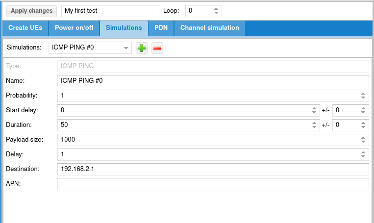
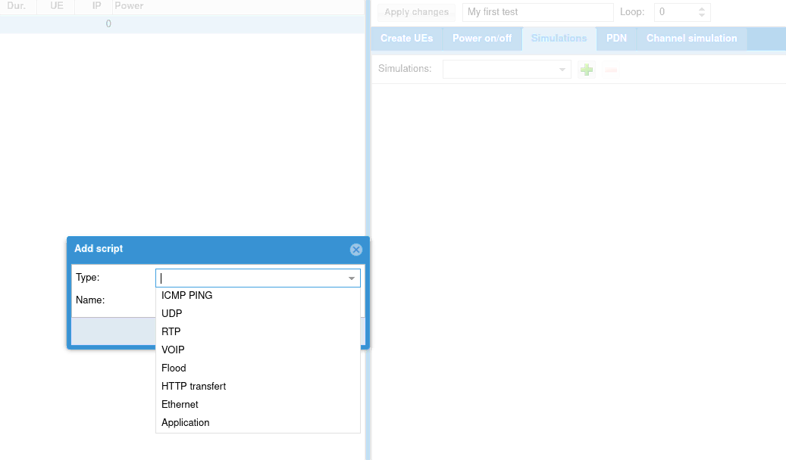
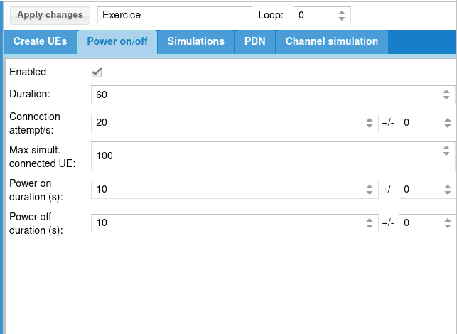
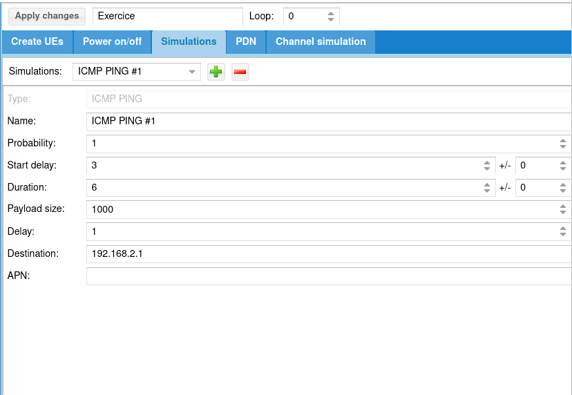
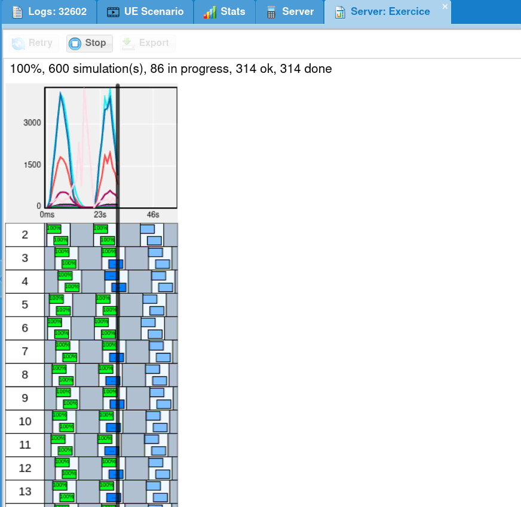

UE scenario tab and call it My first test.Simulations tab and add ICMP ping:
Apply changes
UE Simulator tab.

My first test. A new tab is created to follow scenario.
LTEUE is a LTE and NR UE simulator.
It simulates one or more UEs (typically hundreds of UEs) by communicating through a RF system with eNodeB and core network.
It allows to test LTE and NR procedures and to simulate a large number of
users on eNodeBs.
It supports NR both in Standalone (SA) and Non-standalone (NSA) mode.
It also supports connecting to a 5G core network through a ng-eNB.
The LTEUE is connected to network via eNB through the air on one side.
On the other side it can be managed using WebSocket and IP traffic may be reachable with a Linux TUN network interface.
Your system requires at least GLIBC 2.17.
Other distributions can be used provided the radio frontend drivers are available for them.
The Remote UE feature of LTEUE uses the SCTP protocol for which the necessary packages are not usually installed. In order to install them, do as root user:
dnf install lksctp-tools kernel-modules-extra
sudo apt-get install lksctp-tools linux-image-extra-3.13.0-24-generic
Note that linux-image-extra package name may differ depending on your kernel version.
To verify that SCTP kernel module is running, do as root user:
checksctp
If it reports that the protocol is not supported,
Then reboot the PC in case the Linux kernel was upgraded too.
LTEUE has been compiled against openssl version 3.5.4.
If your system does not have compatible version installed you may have this error message at startup:
error while loading shared libraries: libssl.so.3: cannot open shared object file: No such file or directory
To overcome this problem, you may:
libs subdirectory of your release tarball.In case of persisting issue, raise a ticket from our support site at https://support.amarisoft.com/ with the information provided by below commands executed in LTEUE directory:
uname -a ls -l ldd ./lteue openssl version
LTEUE requires a lot of CPU power and it has hard real time requirements (a maximum latency of 3 ms is required).
In order to get the lowest latency, it is recommended to set up the
performance frequency governor for each CPU core. An example is
included in the lte_init.sh script given with LTEUE.
Some buggy drivers are known to block the CPU during a few tens of
ms. When it happens, LTEUE displays UHD status: L=X U=Y
S=Z. One known problem is the DRM KMS cable polling. The script
lte_init.sh disables it automatically.
Other drivers such as Wifi controllers can give the same problem. In order to avoid such problems, remove all unnecessary peripherals from the PC.
Please refer to sub section of your radio frontend to set it up.
When configured, you will have to select it (See RRH selection).
Read the PCIe SDR documentation (trx_sdr.pdf).
Read the UHD Compatible RF frontends documentation (trx_uhd.pdf).
Use LimeSuiteNG software suite located at https://github.com/myriadrf/LimeSuiteNG, which contains Amarisoft plugin. During build it creates the needed trx_limesuite.so (build directory) file, which can be sim linked or copy pasted.
Decompress the LTEUE archive to a convenient place. The executable lteue can be launched from this directory.
To select appropriate RF frontend to use, please execute following command:
./config/rf_select.sh <type>
Where type is your frontend type:
NB: you can lanch following command to see available frontends:
./config/rf_select.sh
LTEUE needs a license key file to run. It is associated to your PC, so if you replace it or change its hardware configuration you must contact Amarisoft to get a new license key.
The following steps are needed to get this license file:
./lteue config/ue.cfg
It says that the license key is not present and prints a 16 digit hexadecimal code.
delivery@amarisoft.com this hexadecimal code to your contact at Amarisoft.
You will get back the lteue.key license key file.
${HOME} is the home directory of the root user). You can use the shell variable AMARISOFT_PATH to change this path.
Once the license key is installed, lteue should start normally.
First update config/ue.cfg configuration file to match your eNB frequency and bandwidth
by editing:
Look at ue_list section to match UE SIM parameters on MME side.
Check your eNB is running.
Start the LTEUE software as root user.
root privileges are needed to use real time scheduling
priority.
./lteue config/ue.cfg
You should see SIB found message displayed.
Type ue in the monitor, you should see list of UEs with their states.
If UE has been able to register to network, its EMM_STATE should be registered.
If not, look at logs on both UE and eNB/MME side.
Update config/ue-nr-sa.cfg configuration file to match your gNB frequency, bandwidth and numerology by editing:
Look at ue_list section to match UE SIM parameters on AMF side.
Check your gNB is running.
Start the LTEUE software as root user.
root privileges are needed to use real time scheduling
priority.
./lteue config/ue-nr-sa.cfg
You should see SIB found message displayed.
If the gNB is not running, the message TRX discontinuity too wide might appear.
Type ue in the monitor, you should see list of UEs with their states.
To activate the simulation of multiple UEs, the parameter multi_ue should be set to true. In this mode, UE simulator may have difficulties to synchronize with eNB signal. If such a case occurs, you should see that UE is able to receive SIBs but further communications fails with bad CRC on physical layer.
This means that you should adjust the parameter global_timing_advance (See global_timing_advance) in your configuration file.
The global_timing_advance parameter can be set automatically by using the special value -1 (global_timing_advance:-1). If automatic mode is set, the UE simulator uses the timing advance from the first received RAR for all UEs. This is the default behaviour.
You can also manually adjust the timing advance for all UEs in case you still experience CRC erros with automatic mode. You can check TA value on eNB side and
set it to minus 1 in UE
(global_timing_ advance = TA[enb] - 1). if you are using simulator with Amarisoft eNB/gNB, you can type t at eNB/gNB screen and look at PRACH traces.
Then, use ta value minus one as global_timing_advance.
PRACH: cell=01 seq=17 ta=2 snr=18.5 dB PRACH: cell=01 seq=22 ta=2 snr=18.0 dB PRACH: cell=01 seq=23 ta=2 snr=18.5 dB PRACH: cell=01 seq=29 ta=3 snr=17.6 dB
In this example, adjust global_timing_advance to 1.
If you are using another eNB and you do not have access to eNB logs and information, you can enable the PHY and MAC layer logs in UE simulator and look for ta value in MAC traces
12:13:37.086 [MAC] - 0001 ta=13 ul_grant=128768 c_rnti=0x0047
In this example, you should set the global_timing_advance to 12.
If all the simulated UEs are expected to share the same timing advance and if this timing advance will likely need further adjustments (moving UEs, NGSO NTN scenario, ...)
the parameter apply_ta_commands can be set to apply the TA commands received by the network. The apply_ta_commands parameter is supported only in NB-IoT and NR.
To summarize:
apply_ta_commands set to true: the UE simulator can change the timing advance of ALL UEs upon reception of the RAR and TA commands during the runtime
global_timing_advance set to -1: the UE simulator can change the timing advance of ALL UEs only ONCE, upon reception of the first RAR
global_timing_advance set to a <value>: the UE simulator statically fixes the timing advance of ALL UEs at start-up and the it is never adjusted
In multi_ue mode, because all UEs share the same physical layer, the timing advance cannot be adjusted independently for each UE. However, this can be achieved by using the Channel Simulator with the parameter delay_sim set to true.
With delay_sim, a different timing advance for each UE can be simulated by applying a cycling shift on each UE uplink signal. It assumes that the all timing advances stay in a certain range, the center of this range is set either by the first received RAR or by the value of global_timing_advance.
When delay_sim is set to true, the apply_ta_command is not applicable.
When using a big amount of UE (> 32), you need to check in your eNB and MME configurations that enough resources are available.
If your are using Amarisoft eNB for your simulation, you may need to increase SRS resources so that your UE can simultaneously connect to eNB.
You can check you are running into this issue if you find such message in your eNB log file:
11:44:06.533 [RRC] - 01 005d RRC connection request: ue_allocate_resources() fail
Please take a look at srs_dedicated parameter in eNB documentation.
Here is an example to allow more than 1000 UE on eNB:
srs_dedicated: {
srs_period: 320,
srs_bandwidth: 3,
srs_hopping_bandwidth: 0,
cyclic_shift: 0,
},
Depending on the number of UEs simulated, you may also need to provision enough resources for SR (Scheduling Request) and CQI (Channel Quality Indicator) reporting. One way of checking if all your resources are available, is to take a look at the eNB log. In the header part, you always see the following information:
In this example, the eNB has SR resources to serve 480 UEs, CQI resources to serve 960 UEs and SRS resources for 640 UEs. You can increase the SR resources by increasing the value of
# SR resource count=480
# CQI resource count=960
# SRS resources: offsets=32 freqs=10 total=640
sr_period. The CQI resources could as well be increased by reducing its periodicity cqi_period. Depending on the number of UEs that you would like to simulate, you may as well need to increase the following parameters in SIB2:
n1PUCCH-AN to add more RB (Resource Blocks) for SR
preambleTransMax to increase the number of retries after PRACH collision
If your are using Amarisoft MME for your simulation, you may need to increase IP allocation range so that your UE can simultaneously connect to network.
You can check you are running into this issue if you find such message in your MME log file:
11:47:54.643 [NAS] - 0041 Can't allocate new IPv4 address
Please take a look at first_ip_addr, last_ip_addr and ip_addr_shift
parameter in eNB documentation.
Here is an example to allow more than 1000 UE on MME:
first_ip_addr: "192.168.4.2",
last_ip_addr: "192.168.7.254",
ip_addr_shift: 0,
Please make sure to change the net_mask in mme-ifup script as well to go with your IP allocation range.
You can configure your UEs and test scripts using configuration file or you can dynamically use remote API. As an example, the Amarisoft Web interface will allow you to make basic tests.
First enable remote API by setting com_addr in configuration file.
If you want to add UEs, you also need to enable multi_ue.
Then, on Web interface, click on Add server button and set UE com_addr
When Web interface is connected, you should see a green lightning icon on left panel,
logs displayed on center panel and a two new tabs on top:
UE Scenario will be used to define scenarii.
UE Simulator is to control your UE simulator instance.
Click on the UE Scenario tab.
Click on Add button and select New scenario.
The scenario panel will be displayed on right.
After modification, click on Apply changes to commit them.
You will then define for the UE that will be created their configuration:
CountNumber of UE to create.
If set to 0, the scenario shall only be applied to an already created UE.
IMSIIMSI of each UE.
To differentiate each UE, the special character $ or ${f(i)} can be added.
$ will be replaced by the UE index and ${f(i)} will be replaced by the result of the mathematical formula f(i) where i is the UE index. Ex: ${i+64}
NB: if IMSI are all the same, your MME must support it (For Amarisoft MME, check that
multi_sim parameter is true).
RATRAN technology of the UE: either LTE, NB-IoT, LTE + NR (5G NSA) or NR (5G SA).
categoryUE category. This field is not present in NR SA.
Forced RIForces RI return by UE to base station. If set to 0, UE will estimate it.
We recommend to force it to 2 when UE category is > 2.
Forced CQIForces CQI return by UE to base station. If set to 0, UE will estimate it.
We recommend to force it to when UE category is > 2.
KUSIM secret. As for IMSI, $ or ${f(i)} can be used.
OPUSIM OP. Only available for milenage. As for IMSI, $ or ${f(i)} can be used. Configure either OP or OPc.
OPcUSIM OPc. Only available for milenage. As for IMSI, $ or ${f(i)} can be used. Configure either OP or OPc.
AlgoUSIM Algo. Can be XOR or milenage.
TypeAllow to select simulation mode between default simulation, tunnel interface mode
and remote UE mode.
Setup scriptUsed with tunnel interface mode and remote UE mode as tun_setup_script parameter
Remote addressUsed with remote UE mode as rue_addr.
If Power on/off is checked, simulation will generate on and off period for each UE
and place inside each on period defined simulations.
Scenario will try to put as many simulation as possible, depending on parameters.
DurationDuration of the simulation in seconds.
All simulations and power off/on commands will be over before this duration.
If can be seen as the maximum simulation duration.
Connection attempts/sNumber of maximum UE connection attempt per second.
Max simultaneous connected UEMaximum number of simultaneously connected UE.
Simulation will avoid any power on until this limit is reached, in other words,
next power on will occur after new power off.
Power on durationDuration in seconds of power on period. UE will remain powered on during this time and them will power off, allowing a new UE to connect.
Power off durationMinimum duration in seconds of power off period. When powered off, a UE will remain powered off at least this time before being candidate to power on again.
The simulation allow you to create different type of IP traffic simulation.
You can add several simulation per scenario.
Each simulation will be placed inside each power on period of each UE.
Click on add button and select simulation type:
The following parameters apply to all simulations:
Start delayScript start delay in seconds.
If power off/on procedure is not activated, script starts after this delay.
If power on/off procedure is activated, you should always set a delay as power
on procedure may take a while unless it is what you want to do.
DurationDuration of the script in seconds.
You can choose the following simulations:
ICMP PingPerform ICMP Ping request.
UDPSend UDP constant bitrate traffic.
RTPSend RTP constant bitrate traffic.
VOIPSimulate voice RTP traffic using statistical model.
FloodSend UDP packet burst
HTTP transfertSend HTTP requests.
ApplicationLaunches an external application.
Note that TUN mode must be enabled on UE.
For more detail on configuration, See IP simulation messages.
You can replace predefined simulation by a custom application.
For this, choose Application in IP simulation list.
See ext_app for its configuration.
When started, the external application will fork a process and return its standard output and error.
To handle dedicated application, please take a look at libsim_custom.js
file in LTEWWW component.
You can add specific result handler using tag for association.
Note that it requires associated UE to be configured in tunnel mode or with remote UE mode and thus IP simulations can’t be mixed.
The Export will generate json config file that you can directly
integrate in your UE configuration file.
Thus, you can start several time same scenario directly from command line.
When selecting UE tab, several area are displayed.
Refresh button will force refresh of UE list. Else it is done regularly and refresh
period is defined by the number field on the right.
Start button will allow you to start predefined scenario.
Note that only scenario that create UEs will be proposed.
Stop button will stop any pending simulation on UE simulator.
The UE list displays list of UE and their state.
You can click on the first icon to power on and off UE.
Right click on any UE to perform more actions:
Here you can find some general real time statistics.
UE scenario tab and call it My first test.Simulations tab and add ICMP ping:Apply changes
UE Simulator tab.
My first test. A new tab is created to follow scenario.
Following buttons are available:
Let’s try the following exercise:
Let’s create a new scenario.
First, we need to estimate the amount of necessary UE.
If we set only 100 UE:
This implies between t=10s and t=20s, total amount of connected UE will decrease to 0 at t=20s. As a result:

So what can we do ?
We can reduce power off duration but this will imply all UE will stay disconnected 0s !
And we can increase the amount of UE to have a constant pool of disconnected UE.
Let’s do this:
Then we can add our scripts:

With this configuration, HTTP transfer will last 6s.
As power on duration is 10s, it means HTTP transfer will start 2s after power on
and will stop 2s before power off.
Take a look at URL: http://192.1.168.4.1:8080/data?size=10000
This URL will be interpreted by ltesim_server embedded HTTP server as a transfer of 10000 byte(s).
Note that ltesim_server must be started with HTTP server enabled:
sudo ./ltesim_server -a 192.168.4.1 -H 8080
Then add ping
And start it
The main configuration file uses a syntax very similar to the Javascript Object Notation (JSON) with few extensions.
13.4
1.2+3*I
"string"
true or false.
{ field1: value1, field2: value2, .... }
[ value1, value2, .... ]
+, -, * and / are
supported with numbers and complex numbers. + also concatenates
strings. The operators !, ||, &&, ==,
!=, <, <=, >=, > are supported too.
0 and 1 are accepted as synonyms for the
boolean values false and true.
{
value: "foo",
value: "bar",
sub: {
value: "foo"
},
sub: {
value: "bar"
}
}
Will be equivalent to:
{
value: "bar",
sub: {
value: "bar"
}
}
value: "foo",
include "file2.cfg",
foo: "foo"
And file2.cfg is:
value: "bar",
foo: "bar"
Final config will be:
{
value: "bar",
foo: "foo"
}
#define var exprDefine a new variable with value expr. expr must be a valid JSON expression. Note that unlike the standard C preprocessor, expr is evaluated by the preprocessor.
#undef varUndefine the variable var.
#include exprInclude the file whose filename is the evaluation of the string expression expr.
#if exprConsider the following text if expr is true.
#elseAlternative of #if block.
#elifComposition of #else and #if.
#endifEnd of #if block.
#ifdef varShortcut for #if defined(var)
#ifndef varShortcut for #if !defined(var)
In the JSON source, every occurrence of a defined preprocessor variable is replaced by its value.
${expr} syntax. Example: `abc${1+2}d` is evaluated as the string "abc3d". Preprocessor variables can be used inside the expression. Backquote strings may span several lines.
Merge overriding direction depends on context, i.e source may override destination or the opposite.
JSON merge is recursive for Objects and Arrays.
Example, merging
{
foo: { value: "bar" },
same: "one",
one: 1
}
with
{
foo: { value: "none", second: true },
same: "two",
two: 1
}
Will become:
{
foo: { value: "bar", second: true },
same: "one",
one: 1
two: 1
}
assuming first object overrides second one.
In case of Array merging, the final array length will be the maximum length of all merged arrays.
For each element of the final array, merge will be done considering defined elements only.
Ex:
{
array: [0, 1, 2, { foo: "bar" } ],
array: [3, 4],
array: [5, 6, 7, { bar: "foo" }, 8 ]
}
Will be merged to:
{
array: [5, 6, 7, { foo: "bar", bar: "foo" }, 8 ],
}
log_filenameString. Set the log filename. If no leading /, it is relative to the
configuration file path. See Log file format.
log_optionsString. Set the logging options as a comma separated list of assignments.
none, error, info or debug. In debug
level, the content of the transmitted data is logged.
n bytes are shown in hexa. For ASN.1, NAS or Diameter content, show the full content of the message if n > 0.
file.path
and open a new log file (Headers are kept).
file.path,
and open a new log file (Headers are kept).file.path,
and open a new log file (Headers are kept).file.rotate set),
rename and move current log to this path instead of initial log path.
Available layers are: phy, mac, rlc, pdcp, rrc, nas, ip, ikev2, swu, nwu, ipsec
log_syncOptional boolean (default = false). If true, logs will be synchronously dumped to file.
Warning, this may lead to performances decrease.
rf_driverObject. Parameters of the radio driver. See Radio driver configuration.
tx_gainFloat or array of floats. Transmit gain in dB. The range is device dependent. For the PCIe SDR board, the range is between 0 and 89.75 dB. For the USRP N2x0 device with the SBX daughterboard, the range is 0 to 31.5 dB. With an array of floats a different gain is specified for each channel.
rx_gainFloat or array of floats. Receive gain in dB. The range is device dependent. For the PCIe SDR board, the range is between -11 and 77 dB (the exact limits depend on the RX frequency). For the USRP N2x0 device with the SBX daughterboard, the range is 0 to 31.5 dB. With an array of floats a different gain is specified for each channel.
udc_portsOptional array of objects. Each object contains the configuration of the corresponding UDC port.
Each object contains the following properties:
argsString. Set the UDC configuration parameters. Each parameter composing the string is separed by semicolon (See args configuration).
cmdString. Specifies the path to the script for the UDC configuration (See UDC configuration reference). The script is called once for each configured udc_port with the following command line arguments:
args: (See args)
lo_freq: (See lo_freq)
min_freq: automatically set by the software, spectrum minimum frequency for aggregated cells using the same udc_port
max_freq: automatically set by the software, spectrum maximum frequency for aggregated cells using the same udc_port
freq: automatically set by the software, FR2 cell central frequency, for each rf_port using the same udc_port
bandwidth: automatically set by the software, FR2 cell bandwidth, for each rf_port using the same udc_port
lo_freqOptional float. Specifies the UDC LO frequency in MHz to be configured. If not present, it will be automatically computed.
tx_power_offsetOptional float. Measured in dB, negative value. It corresponds to the amount of attenuation between the SDR and the UDC IF port.
The default value is 0, in case of aggregated cells with combiner the attenuation is computed as -10*log10(COMBINER_PORTS).
cell_groupsArray of object. Parameters for each group of similar cells. See Cell group configuration.
ue_listArray of object. Each element gives the configuration of a UE. See UE configuration.
custom_freq_bandOptional object or array of objects. Define a non standard LTE or NR frequency band. Standard bands can also be overriden by this option. If the uplink information is not provided, it is assumed to be the same as the downlink (TDD band). Use an array of objects if you want to define more than one custom band.
For LTE bands, the following parameters are available:
bandRange: 1 to 256.
dl_earfcn_minRange: 0 to 262143.
dl_earfcn_maxRange: 0 to 262143.
dl_freq_minFloat. Low DL frequency in MHz.
ul_earfcn_minOptional integer. Range: 0 to 262143.
ul_earfcn_maxOptional integer. Range: 0 to 262143.
ul_freq_minOptional Float. Low UL frequency in MHz.
ntnOptional boolean. True if this is a NTN band.
For NR bands, the following parameters are available:
band_nrRange: 1 to 1024. NR band number.
dl_freq_minFloat. Range: 0 to 65535. Minimum DL frequency in MHz. Use 0 if no DL.
dl_freq_maxFloat. Range: 0 to 65535. Maximum DL frequency in MHz. Use 0 if no DL.
ul_freq_minFloat. Range: 0 to 65535. Minimum UL frequency in MHz. Use 0 if no UL. If not provided, use the same value as DL (TDD).
ul_freq_maxFloat. Range: 0 to 65535. Maximum UL frequency in MHz. Use 0 if no UL.
ssb_scsArray of integers. List of allowed SSB subcarrier spacing for this band. Allowed values: 15, 30, 120 or 240.
f_rasterEnumeration: 100, 15, 15_30, 15_30_100, 60_120, 100_enhanced. Frequency raster in kHz.
ssb_case_cBoolean. True if SSB case C is enabled on this band.
min_40mhz_bwBoolean. True if the minimum allowed bandwidth on this band is at least 40 MHz. This information is used to select the CoReSet #0 table in standalone mode.
delta_gscnOptional enumeration: 1, 3, 7, 16 (default = 1). GSCN step size.
ntnOptional boolean. True if this is a NTN band.
rue_bind_addrOptional string. Set it to enable and define lterue bind address.
user_thread_countOptional integer (default = 1). Sets number of threads for external application launcher and tun_setup_script.
com_addrOptional string. Address of the WebSocket server remote API. See Remote API.
If set, the WebSocket server for remote API will be enabled and bound to this address.
Default port is 9002.
Setting IP address to [::] will make remote API reachable through all network interfaces.
com_nameOptional string. Sets server name. UE by default
com_ssl_certificateOptional string. If set, forces SSL for WebSockets. Defines CA certificate filename.
com_ssl_keyOptional string. Mandatory if com_ssl_certificate is set. Defines CA private key filename.
com_ssl_peer_verifyOptional boolean (default is false). If true, server will check client certificate.
com_ssl_caOptional string. Set CA certificate. In case of peer verification with self signed certificate, you should use the client certificate.
com_log_lockOptional boolean (default is false). If true, logs configuration can’t be changed
via config_set remote API.
com_log_usOptional boolean (default is false). If true, logs sent by log_get remote API
response will have a timestamp_us parameters instead of timestamp
com_authOptional object. If set, remote API access will require authentication.
Authentication mechanism is describe in Remote API Startup section.
passfileOptional string. Defines filename where password is stored (plaintext).
If not set, password must be set
passwordOptional string. Defines password.
If not set, passfile must be set.
unsecureOptional boolean (default false). If set, allow password to be sent plaintext.
NB: you should set it to true if you access it from a Web Browser (Ex: Amarisoft GUI)
without SSL (https) as your Web Browser may prevent secure access to work.
com_log_countOptional number (Default = 8192). Defines number of logs to keep in memory before dropping them.
Must be between 4096 and 2097152).
license_serverConfiguration of the Amarisoft license server to use.
Object with following properties:
server_addrString. IP address of the license server.
nameOptional string. Text to be displayed inside server monitor or remote API.
tagOptional string. If set, server will only allow license with same tag.
Example:
license_server: {
server_addr: "192.168.0.20",
name: "My license"
}
sim_ip_remote_addrOptional string. Defines default server address for IP simulation events of all UE.
cpu_core_listOptional array. Defines the list of CPU cores indexes on which LTEUE will run.
If not set, LTEUE may use all cores, refer to cpu_core_list for syntax.
Note that the number of cores depends on Linux scheduler and LTEUE configuration.
vrb_lib_pathOptional string. Path to the vrb_dpdk.so dynamic library file located in the delivered tarball.
If present, the eNodeB uses Intel vRANBoost device for LDPC decoding.
The CPU must support vRANBoost, DPDK must be installed on the machine and the vRANBoost device must be configured properly before use.
This mode enables faster LDPC decoding. It can be used to lower the CPU usage of the stack or to increase
the number of LDPC decoding iterations in order to improve decoding sensitivity.
sim_eventsArray of object. Each element defines a remote API request (Remote API)
except that message field is replaced by event.
sim_events_loop_countIf set, will define loop_count for each event of sim_events, See loop_count.
sim_events_loop_delayIf set, will define loop_delay for each event of sim_events, See loop_delay.
nameDriver name. The corresponding DLL file name is trx_name.so.
It is searched in the lteue executable directory, in the path configured
in the path property.
The following drivers are currently available:
| dummy | Dummy driver. Can be used to measure the RX to TX latency. |
| sdr | Amarisoft PCIe SDR driver. Parameters are defined here: SDR50 SDR100 CPRI |
| uhd | Ettus Research UHD driver for USRP N2x0, B2x0 and X3x0 series. Please check Amarisoft UHD documentation delivered within package. |
| lms7002m | Lime MicroSystem LimeSDR platform driver. Please check Amarisoft SDR documentation delivered within package. |
If you don’t have and need one of these drivers, please contact customer@amarisoft.com and ask for it.
A cell groups references the configuration of 1 or more cells of the same type.
Cells within same group must be synchronized at subframe/frame level.
Handovers are not allowed between cells of different groups.
To perform 5G NSA, the configuration must contain at least two groups, one of LTE type and one of NR type.
group_typeString. Defines cell type, can be:
lteLTE category 0 to max.
cat_m1Cat-M1
nbiotNB-IoT
nr5G NR
tx_gain_offsetOptional float. Set the digital TX gain (can be seen as the opposite of the TX backoff power). Warning: do not change it unless you know what you do because a too high value introduces saturation in the output.
For LTE, the default value is -12 dB in multi UE mode and -8 dB in
single UE mode.
For NB-IoT the default value is always -20 dB.
For NR the default value is always -14 dB.
tx_time_offsetOptional integer (LTE only). Time offset (in samples) for the TX stream relative to the RX stream. It may be needed to compensate internal delays in the radio head.
tx_pad_durationOptional integer (default = 23) (NR only). Duration (in 1/1.92 us units) of the zero sample burst sent before the start of the uplink burst in TDD. It corresponds to the power amplifier ramp up duration. The appropriate value depends on the radio head.
ground_positionOptional object needed for GNSS location estimate for LPP and/or NTN.
For NTN, this position will allow the dynamic computation of the timing advance, based on satellite realtime position.
Defines the geographic coordinates at the origin [0, 0, 0] in the local coordinates system in which the position in defined See position.
Contains the following parameters:
latitudeFloat value. Range -90 to 90. Degrees of latitude.
longitudeFloat value. Range -180 to 180. Degrees of longitude.
altitudeOptional float value (default = 0). Range -1000m to 20km. Altitude in meters.
cellsArray of object. Each element gives the configuration of a cell. See Cell configuration.
multi_ueBoolean. If enabled, UE simulation mode is activated where multiple UEs can be run at the same time. Note
that when this mode is enabled, you should adjust the
global_timing_advance cell parameter. If set to false, the real UE mode is activated with one single instance of UE.
cell_syncOptional boolean (default = true), NR only. When multiple cells are configured in the group,
this parameter indicates that the cells are synchronized at the slot level. It must be set to true for CA or SUL operation.
On the opposite, if the cells are known to have very different timing (eg in NTN scenarios), the parameter should be set to false.
long_rangeOptional boolean (default = false). If true, enable a proprietary Amarisoft extension to extend the cell range (a modified eNodeB is necessary) (LTE only). This parameter applies to all the UEs in multi-UE mode.
rel13_5Optional boolean (default = true). If true, enable incompatible physical layer changes for NPBCH/BCCH introduced in release 13.5 (category NB1 only).
channel_simOptional boolean (default = false). If set, the UE channel simulator
is enabled. It is only available in multi UE mode (multi_ue =
true). See channel_sim for more information.
pdcch_decode_optOptional boolean (default = false). If set, pdcch_decode_opt_threshold
will be used (LTE and NR).
pdcch_decode_opt_thresholdOptional float. pdcch_decode_opt must be set to true. This
parameter defines an EPRE (Energy Per Resource Element) threshold
relative to CRS (LTE) or SSB (NR) for PDCCH detection to save CPU
time.
Use it only with high SNR (Ex: using cables) as it may prevent
from decoding low power PDCCH.
pdsch_max_itsOptional integer (range 1 to 20, default = 6). CPU load limitation: set the maximum number of iterations of the turbo decoder (LTE only). A higher value gives a lower frame error rate but a higher CPU load.
ldpc_max_itsOptional integer (range 1 to 50, default = 5). CPU load limitation: set the maximum number of iterations of the LDPC decoder (NR only). A higher value gives a lower frame error rate but a higher CPU load.
cpu_core_listOptional array. Defines the list of CPU cores indexes on which the cell group will run.
Refer to cpu_core_list for syntax.
If not set, LTEUE may use all cores, or if RF frontend driver provides NUMA nodes,
they will be used.
n_antenna_dlOptional integer (default = 1). Range: 1 to 8. Set the number of downlink antennas. See channel_sim to have more information when the channel simulator is enabled. NB-IoT cells only support a single downlink antenna.
n_antenna_ulOptional integer (default = 1). Range: 1 to 8. Set the number of uplink antennas. See channel_sim to have more information when the channel simulator is enabled. LTE and NB-IoT cells only support a single uplink antenna.
sample_rateOptional float. Sample rate in MHz. It is normally automatically set
depending on the radio head capabilities and selected bandwidth.
To take effect, bandwidth must not be set.
rf_dl_freqOptional float. Override the tuning frequency in MHz for the downlink. This optional is only needed if there is a frequency translator after the SDR device.
rf_ul_freqOptional float. Override the tuning frequency in MHz for the uplink. This optional is only needed if there is a frequency translator after the SDR device.
rf_portOptional integer (default = automatically incremented). Define the RF port index
for this cell.
By default, each cell has its own RF port, but several cells can share the same RF port by setting the same rf_port value.
RF port sharing is supported only for NB-IoT cells belonging to the same cell group.
The first cell in the cell_list with a given rf_port will set the center frequency of the SDR
and shall have a bandwidth value accomodating all the cells sharing the RF port.
global_timing_advanceOptional integer. Range: -1 to 1292 (default = -1). This option is
only meaningful in multiple UE mode and specifies the timing advance
of the uplink relative to the downlink. The unit is 1/1.92 us
for non NR cells and 1/(0.128*SCS) us for NR cells where
SCS is the cell subcarrier spacing in kHz. The special value -1
indicates to use the timing advance from the first received
RAR. See Multiple UE case for more information.
apply_ta_commandsOptional boolean (default = false). This option is only meaningful in
multiple UE mode and allows the UE to follow the TA commands received
from the network. This option is only available for NB-IoT and NR
UEs. It is not possible to have both delay_sim and
apply_ta_commands set to true. See Multiple UE case for more
information.
forced_pciOptional integer (default = -1). Force the selected Physical Cell Identity. The default value -1 indicates to select the first detected PCI. This parameter is currently not available for NB-IoT cells.
tx_gain_offsetOptional float. If set, overrides group value: tx_gain_offset.
ntn_n_ta_ueOptional float (default = -1). If positive, specify a constant NTA_UE in microseconds
when computing Timing Advance in NTN.
If negative or left out and if the cell is in a NTN band, ground_position in the cell group is mandatory.
ntn_eci_aligned_ecefOptional boolean (default = false).
If set to true, the orbital parameters (read from SIB31 in NB-IoT or SIB19 in NR)
are understood with the ECI reference frame aligned with the ECEF frame at the current epoch.
If set to false, the ECI reference is aligned with the J2000 vernal equinox.
ntn_service_dl_freqOptional integer (default = 0). NR only. If non zero, this parameter sets the value in Hz of the actual DL frequency used on the satellite service link when it is different from the DL frequency specified by dl_nr_arfcn.
ntn_service_ul_freqOptional integer (default = 0). NR only. If non zero, this parameters sets the value in Hz of the actual UL frequency used on the satellite service link.
ntn_internal_modelOptional enumeration: auto, orbital, state_vectors (default = auto). Choose the internal propagation model for the satellite position,
either based on keplerian orbital elements or based on a force-model integration of the state vectors.
When set to auto, the propagation model will depend on the content of SIB19, either OrbitalElements or StateVectors.
cpu_core_listOptional Array. Defines the core affinity of the digital signal processing engine (Physical layer) for both UL and DL of the cells associated to this rf_port (See cpu_core_list).
cpu_core_list_ulOptional Array. Defines the core affinity of the digital signal processing
engine (Physical layer) for UL of the associated cell(s).
If set, overrides cpu_core_list.
cpu_core_list_dlOptional Array. Defines the core affinity of the digital signal processing
engine (Physical layer) for DL of the associated cell(s).
If set, overrides cpu_core_list.
nb_threadsOptional number. If set, forces the number of threads used by the digital processing engine for DL or UL of the associated cell(s).
nb_threads_ulOptional number. If set, forces the number of threads used by the digital
processing engine for UL of the associated cell(s).
If set, overrides nb_threads.
nb_threads_dlOptional number. If set, forces the number of threads used by the digital
processing engine for DL of the associated cell(s).
If set, overrides nb_threads.
cpu_numa_listOptional array of integers. Each integer represent a NUMA node index.
If set will, digital processing engine will use the list of defined NUMA nodes
for its memory usage.
If this field is not set but cpu_core_list is defined, LTEUE will select
the NUMA nodes associated to the affected cores. This means that most of the time this
parameter shouldn’t be set.
The only relevant case is when a NUMA node has no RAM bank connected,
you may use this parameter to select the closest NUMA node with memory.
s72Optional object. If set, this cell port will use ORAN split 7.2 TRX API to send data to the radio unit.
This section has the following properties:
rtc_idInteger. RTC id.
ud_comp_hdrOptional integer (default = 0). Set User Data compression header configuration.
Can be 0 for no compression, 0x81 for BF8, 0x91 for BF9, 0xc1 for BF12 or
0xe1 for BF14.
port_mappingOptional array of integers. If set, allows to map UE antenna to different RU port.
Each number represents the RU port ID used for the antenna in ORAN packets.
This array must have same number of elements as the maximum between DL antenna count and UL antenna count.
Each RU port must be set once in the array.
Ex:
port_mapping: [1, 2, 4, 0],
Means UE will use RU port 1 for the first antenna, RU port 2 for the second antenna...
By default, it is set to [0, 1, 2, ... ]
port_mapping_dlOptional array of integers. Same as port_mapping except that it applies only for
DL antenna and the array must have same number of elements as DL antenna count.
port_mapping_ulOptional array of integers. Same as port_mapping except that it applies only for
UL antenna and the array must have same number of elements as UL antenna count.
port_mapping_prachOptional array of integers. Same as port_mapping except that it applies only for
the PRACH ORAN packets.
gen_prb0Optional boolean (default = false). If true, numPrbc of U-Plane ORAN section will be set
to 0 when all ressources blocks are used and exceed 255.
If set to false and number of ressources blocks exceed 255, multiple ORAN sections
will be generated.
cp_dlOptional boolean (default = true). If false, LTEUE is not expecting DL-Control plane packets and will assume DU has to send full spectrum for every DL symbols.
relative_symbolOptional boolean (default = false). In case of section type 3, start symbol of both control and data packet will start at 0, i.e relative to time_offset
debugOptional boolean (default = false). If true, mode information will be displayed in logs. May have an impact on performances.
The following parameters are available if group_type is not set to "nr":
dl_earfcnRange: 0 to 262143. Set the DL EARFCN. See https://www.sqimway.com/lte_band.php to convert between the center frequency and EARFCN.
ul_earfcnOptional. Range: 0 to 262143. Set the UL EARFCN. If not provided, the default DL/UL gap is used (i.e. ul_earfcn = dl_earfcn + 18000 for FDD).
bandwidthOptional number. Defines LTE bandwidth and can be 20, 15, 10, 5, 3 or 1.4.
If omitted, sample_rate has to be set.
sample_rate_numOptional integer (LTE only). Main sample rate used for the LTE signal
processing in 1.92 MHz units (hence 3 means 5.76 MHz). It is normally
automatically set depending on the radio head capabilities and
selected bandwidth. If the resulting rate is different from
sample_rate, a fractional sample rate interpolator is used to
convert the sample rate (this is only possible with a 15kHz SCS without ORAN split 7.2).
prach_delayOptional integer (LTE and NR only). Range: 0 to 1920 (default = 0). This option specifies the PRACH delay relative to the other uplink signals in TA units. The same PRACH delay is applied to all the UEs of the cell. This option is useful to simulate an arbitrary PRACH timing advance in multiple UE mode.
sync_idOptional integer (default = 0). Cells with same sync_id must be synchronized
in time (Same Frame/SubFrame numbers). To allow non synchronized cells within a group,
set different sync_id for each cell. Only applicable to LTE UEs.
Note that for proper CA operation, the PCell and SCells must be synchronized.
The following parameters are available if group_type is set to "nr":
bandInteger (range 0 to 1024). NR band.
dl_nr_arfcnInteger (range 0 to 3279165). Set the DL NR-ARFCN. See https://www.sqimway.com/nr_band.php to convert between the center frequency and NR-ARFCN.
ul_nr_arfcnInteger (range 0 to 3279165). Set the UL NR-ARFCN. See https://www.sqimway.com/nr_band.php to convert between the center frequency and NR-ARFCN.
subcarrier_spacingInteger (15, 30, 60, 120). Set the cell subcarrier spacing.
ssb_subcarrier_spacingOptional integer (15, 30, 120, 240). Set the SSB subcarrier spacing.
If absent, the value from subcarrier_spacing is used instead.
ssb_nr_arfcnOptional integer (range 0 to 3279165). Set the SSB NR-ARFCN.
See https://www.sqimway.com/nr_band.php to convert between the center frequency and NR-ARFCN.
If absent, the value from dl_nr_arfcn is used instead.
ssb_case_cOptional boolean. Set to true if case C must be used instead of case B for 30 kHz SSB SCS. The default value depends on the selected frequency band (see 3GPP TS 38.101-1 table 5.4.3.3-1).
bandwidthOptional integer (range 3 to 400). Cell bandwidth.
n_rb_dlOptional integer (range 20 to 275). Number of DL resource blocks.
Used if bandwidth is absent.
rx_to_tx_latencyOptional integer (Range 2 to 32, default = 4). Minimum allowed latency in slots between RX and TX.
This parameter will bound the minimum k1 and k2 parameter allowed by the system.
Increasing the value will improve performances, especially in case of radio frontend underflows.
pdcch_log_filenameOptional string. Log the PDCCH decoding attempts to the pdcch_log_filename file. It is useful only when debugging the PHY layer. Do not enable it in other cases as it may generate a large log file and may degrade the UE performance.
udc_portOptional integer. Selects the UDC port used for the cell. Cells aggregated with the same UDC device, will use the same udc_port number.
tx_power_offsetOptional float. If set add an offset in dB to any TX signal power information such as ’t spl’. Useful when placing an attenuator (negative value) or a power amplifier (positive value) after the radio frontend TX output.
The following parameters configure the virtual USIM:
mnc_nb_digitsOptional enumeration: 2, 3 (default = 2). Set the number of digits in home network MNC.
imsiOptional string. Shall be present if nai is absent. Set the IMSI.
naiOptional string applicable to 5G only.
Shall be present if imsi is not set.
Set the Network specific identifier-based SUPI.
sim_algoOptional enumeration. xor, milenage or tuak (default = xor). Set the USIM authentication algorithm. Note: test USIM cards use the XOR algorithm.
sqnOptional string (6 byte hexadecimal string). Default =
"000000000000". Set the initial sequence number. For the XOR
algorithm, the actual value does not matter. For the Milenage or TUAK
algorithm, a sequence number resynchronization is initiated if the
sequence number does not match the one stored in the USIM.
KString. Set the user secret key (as a 16 bytes hexadecimal string, or eventually 32 bytes hexadecimal string for TUAK).
opOptional string. Operator key (as a 16 byte hexadecimal
string). When the Milenage authentication algorithm is used, either
op or opc must be set.
opcOptional string. Operator key preprocessed with the user secret key
(as a 16 byte hexadecimal string). When the Milenage authentication
algorithm is used, either op or opc must be set.
rOptional array of 5 integers (range: 0 to 127). Allows to customize the r1 to r5 parameters when Milenage authentication algorithm is used. If the array is not present, the default values (as defined in 3GPP TS 35.206) are used.
cOptional array of 5 strings. Each value contains a 16 byte hexadecimal string. Allows to customize the c1 to c5 parameters when Milenage authentication algorithm is used. If the array is not present, the default values (as defined in 3GPP TS 35.206) are used.
topOptional string. Operator key (as a 32 byte hexadecimal
string). When the TUAK authentication algorithm is used, either
top or topc must be set.
topcOptional string. Operator key preprocessed with the user secret key
(as a 32 byte hexadecimal string). When the TUAK authentication
algorithm is used, either top or topc must be set.
keccak_iterOptional integer (range: 1 to MAX_INT). Allows to customize the number of Keccak permutations performed when using the TUAK authentication algorithm. If the item is not present, the default value 1 (as defined in 3GPP TS 35.231) is used.
cag_info_listOptional array. Subscribed CAG information list. Each element of the array contains:
plmnString (5 or 6 digits).
cag_id_listArray of 1 to 12 integers (range 0 to 4294967295) giving the list of the allowed CAG-Identifiers.
cag_only_indOptional boolean (default = FALSE). Indication that the UE is only allowed to access 5GS via CAG cells.
csg_info_listOptional array of objects. Subscribed CSG information. Each element of the array contains:
plmnString (5 or 6 digits).
csg_id_listArray of integers in range 0 to 0x7FFFFFF. Allowed CSG id list in the PLMN.
res_lenOptional integer (default = 8). Defines length of response in bytes during authentication. For TUAK authentication algorithm, the RES length configured on UE and network side must match and the value must be 4, 8 or 16 bytes long.
preferred_plmn_listOptional array. Each element of the array contains a PLMN string (5 or 6 digits) ordered by decreasing priority. Can be present only if none of plmnwact, oplmnwact and ehplmn is present.
plmnwactOptional array containing the list of user controlled PLMN with access technology (refer to 3GPP 31.102 chapter 4.2.5) used by the NAS PLMN selection procedure. Each element of the array contains a PLMN and the allowed access technologies, ordered by decreasing priority:
plmnString (5 or 6 digits).
access_technoArray of enumeration: eutra_nb, eutra_wb, eutra, nr.
oplmnwactOptional array containing the list of operator controlled PLMN with access technology (refer to 3GPP 31.102 chapter 4.2.53) used by the NAS PLMN selection procedure. See plmnwact for coding.
hplmnactOptional array of elements listed in decreasing priority order, giving the access technologies of the home PLMN the UE will consider when searching for the HPLMN (refer to 3GPP 31.102 chapter 4.2.54). Each element is an array of enumeration: eutra_nb, eutra_wb, eutra, nr. Example:
hplmnact:
[
["nr", "eutra_nb"],
["eutra_wb"]
]
ehplmnOptional array containing the equivalent home PLMN list (refer to 3GPP 31.102 chapter 4.2.84) used by the NAS PLMN selection procedure. Each element of the array contains a PLMN string (5 or 6 digits) ordered by decreasing priority.
lrplmnsiOptional enumeration: last_registered, hplmn_or_last_registered (default = last_registered). Gives the Last RPLMN Selection Indication as defined in 3GPP 31.102 chapter 4.2.86.
access_control_classesOptional array of integers containing the assigned access control classes (refer to 3GPP 31.102 chapter 4.2.15 EFACC).
Default value is [0, 1, 2, 3, 4, 5, 6, 7, 8, 9].
Each element of the array is an access class number in range 0-9 or 11, 12, 13, 14, 15.
uac_access_identitiesOptional array of enumeration: "mps", "mcs". Gives the configuration information pertaining to access identities allocated for specific high priority services. If "mps" is present in the array, the UE is configured for Multimedia Priority Service, if "mcs" is present in the array, the UE is configured for Mission Critical Services, see specified in 3GPP 31.102 chapter 4.4.11.7 EFUAC_AIC;
eabOptional boolean (default = false). Indicates whether the UE applies EAB (extended access barring). Equivalent parameter in the USIM is ’Extended access barring’ in EFNASCONFIG (see 31.102 chapter 4.2.94 EFNASCONFIG).
external_simOptional boolean (default = false). If set, will try to use SIM card reader instead previous parameters. (Uses the PCSC lite library)
sim_reader_indexOptional integer (range 0 to 1024). If external_sim is set, this allow to select SIM card reader if several are plugged.
The following parameters are available for UEs of all types, unless stated otherwise.
imeisvOptional string. Set the International Mobile station Equipment Identity and Software Version Number. If not set, will be automatically generated.
as_releaseOptional integer (default = 8). Define the Access Stratum release for UE capabilities. Releases 8 to 18 are supported.
nas_5gsOptional boolean (default = false). When set to true, the LTE or NB-IoT UE will connect to a 5G core network through a ng-eNB.
ue_categoryOptional integer (-2 to 13) or string (default = 4). Set the UE
category/type. The string values m1, nb1, nb2 or nr are
also accepted. For backward compatibility, -1 means category M1 and
-2 means category NB1.
Category M1 or NB1 need at least as_release 13.
Category NB2 needs at least as_release 14.
Category NR needs at least as_release 15 and sets the UE in 5G SA mode.
All UEs must be either category >= 0, category M1, NB-IoT or NR.
long_drxOptional boolean (default = true). When set to false, the UE does not indicate supporting DRX in its capabilities (LTE, NR).
short_drxOptional boolean (default = true). When set to false, the UE does not indicate supporting short DRX cycles in its capabilities (LTE, NR).
t3324Optional integer. Value in seconds of the T3324 information element sent by the UE in the NAS Attach Request, Tracking Area Update Request and Registration Request messages.
sprt_supportOptional boolean (default = false). Set strictly periodic registration timer support in 5GMM MICO indication IE.
t3412Optional integer. Value in seconds of the T3412 extended information element
sent by the UE in the NAS Attach Request and Tracking Area Update Request messages,
or requested T3512 information element sent by the UE in the NAS Registration Request message.
t3324 parameter must be set.
edrx_paramsOptional integer (range 0 to 255). If present, UE will declare support for extended idle mode DRX. This integer is encoded according to 3GPP TS 24.008 chapter 10.5.5.32.
dl_caOptional boolean (default = true). When set to false, the UE does not report BandCombinations with DL CA in its capabilities.
ul_caOptional boolean (default = true). When set to false, the UE does not report BandCombinations with UL CA in its capabilities.
ca_filter_bc_3x101Optional boolean (default = true). When set to false, the UE will report all
the possible band combinations (in the SupportedBandCombinationList IE of the UE capabilities)
based on the cells array, regardless of their support in 3GPP TS 36.101/38.101 v18.2.0.
When set to true, only the combinations supported in 3GPP specification will be reported.
ca_intrabandOptional enumeration: all, contiguous_only, non_contiguous_only (default = all). Controls how the UE reports the intraband CA band combinations.
wus_supportOptional boolean (default = true). When set to false, the UE does not indicate supporting wake up signal in NB-IoT and Cat-M1.
wus_edrx_min_time_offsetOptional enumeration: 40, 240, 1000, 2000 (default = 40). Minimum time offset (in ms) between the end of WUS transmission and beginning of paging occasion when UE is in eDRX.
gwus_paging_probabilityOptional enumeration: -1, 0, 5, 10, 15, 20, 25, 30, 35, 40, 45, 50, 55, 60, 65, 70, 75, 80, 85, 90, 95, 100 (default = -1: group WUS not activated). Requested paging probability of the UE used to determine the WUS group to which belongs the UE.
apnOptional string. If set, this APN will be used for UE attachment as default APN.
authenticationOptional enumeration: none, pap, chap or eap (default set to none).
Defines the APN authentication mechanism used during attachment.
eap is applicable to 5G only.
usernameOptional string (up to 100 characters) containing the user name used for pap, chap or eap authentication.
passwordOptional string (up to 100 characters) containing the password used for pap, chap or eap authentication.
tun_setup_scriptOptional string. Set the path of the shell script to set up the virtual network
interface (Path can be absolute or relative to config file).
Script is called for each PDN with following parameters:
tun_script_param associated to UE
followed by those optional informations:
pdn_connect command
A sample script is provided: ue-ifup.
It configures a network namespace for each UE.
As a result you can set IP traffic this way:
ip netns exec <UE ID> ping 192.168.3.1
If no script is given, no virtual network interface is created.
If rue_addr is set, this parameter will be forwarded to remote UE server.
When this mode is on, only ext_app simulation is available.
tun_script_paramOptional string. Parameter passed to tun_setup_script for this UE.
tun_ifnameOptional string. If tun_setup_script is set, defines the name of the TUN interface
for the first PDN. The TUN interface may have been created outside of the program.
rue_addrOptional string. Address of remote UE server. See Remote UE. Default port is 2152.
Note that tun_setup_script is mandatory.
sim_eventsArray of object. Each element defines a remote API request (Remote API)
except that message field is replaced by event.
ue_id is implicitely set to this UE so that the message may apply to it.
sim_events_loop_countIf set, will define loop_count for each event of sim_events, See loop_count.
sim_events_loop_delayIf set, will define loop_delay for each event of sim_events, See loop_delay.
sim_ip_remote_addrOptional string. Defines default server address for IP simulation events
attach_request_with_dummy_gutiOptional boolean (default = false). If true, attach procedure will be done with a dummy GUTI instead of IMSI.
emergency_attachOptional boolean (default = false). If true, attach procedure will be for emergency services.
imei_attachOptional boolean (default = false). If true, attach procedure will be done with an IMEI instead of an IMSI.
ue_usage_settingOptional enumeration: none, voice, data (default = data). Sets the UE usage setting as defined in 3GPP TS 24.008 chapter 10.5.5.28 and 3GPP TS 24.501 chapter 9.11.3.55.
voice_domain_preference_eutranOptional enumeration: cs_only, ims_ps_only, cs_preferred, ims_ps_preferred (default = ims_ps_only). Sets the voice domain preference for E-UTRAN as defined in 3GPP TS 24.008 chapter 10.5.5.28.
cp_ciot_optOptional boolean (default = false). If true, enable control plane CIoT optimization support. It can be used if the network supports it.
cp_edtOptional boolean (default = false). If true and control plane CIoT is supported, enable CP-EDT support.
attach_without_pdnOptional boolean (default = false). If true ;
For LTE, enable attach without PDN for data
transfer via SMS. It can be used if the network supports it.
For 5G, the UE will not set the Follow-On request bit in the initial registration message
and will not request any PDU session establishment, unless a call to pdn_connect is performed.
attach_pdn_typeOptional enumeration: ipv4, ipv6, ipv4v6, unstructured, ethernet (default = ipv4v6).
For LTE, selects the PDN type for the PDN connectivity request message piggybacked in attach request.
For 5G, selects the PDU session type for the PDU session establishment request sent after the UE registration.
Note that IPv6 and Ethernet require the use of the tun interface.
attach_pdn_imsOptional boolean (default = false). Specifies if the PDN connectivity request message piggybacked in attach request or the first PDU session establishment request sent after the UE registration is for IMS or not.
combined_eps_imsi_attachOptional boolean (default = false). If true, attach procedure type will use combined EPS/IMSI.
sms_centre_addressOptional object used to configure the SMS centre address. Contains the following parameters:
type_of_numberOptional enumeration "unknown", "international", "national" (default = "unknown"). SMS centre address type of number.
numbering_planOptional enumeration "unknown", "national", "private" (default = "unknown"). SMS centre address numbering plan identification.
numberString. Contains optional ’+’ at first position followed by a maximum of 20 digits. SMS centre address number.
use_security_context_for_registrationOptional boolen (default = true). If false, the UE will never use its current security context for the EMM attach request or initial 5GMM registration request message.
eutra_voice_supportOptional boolean (default = true). If true, UE declares voice support in EUTRA RRC capabilities.
nr_voice_supportOptional boolean (default = true). If true, UE declares voice support in NR RRC capabilities.
lpp_supportOptional boolean (default = true). Indicates the support of LPP in the UE.
cipher_algo_bitmapOptional integer (default = 0xe0). Defines the ciphering algorithms advertised by the UE in the NAS UE Network Capability information element. The coding of the field is per 3GPP TS 24.301 chapter 9.9.3.34: most significant bit is for EEA0/5G-EA0, followed by EEA1/5G-EA1, EEA2/5G-EA2 and EEA3/5G-EA3.
If encryption is necessary, AES (EEA2/5G-EA2) would give the best performance
if your CPU supports the AES NI Intel instruction set (use "grep -o aes /proc/cpuinfo"
in Linux to see if AES is displayed). In this case, it is recommended to configure the network to use EEA2. Alternatively, the EEA2 usage could be forced at the network side by setting the supported algorithms to EEA0 and EEA2 in the bitmap, if there is no other solution.
integ_algo_bitmapOptional integer (default = 0xe0). Defines the integrity algorithms advertised by the UE in the NAS UE Network Capability information element. The coding of the field is per 3GPP TS 24.301 chapter 9.9.3.34: most significant bit is for EIA0/5G-IA0, followed by EIA1/5G-IA1, EIA2/5G-IA2 and EIA3/5G-IA3.
For best performance, use AES (EIA2/5G-IA2) if your CPU supports the AES NI Intel instruction set (use "grep -o aes /proc/cpuinfo" in Linux to see if AES is displayed). In this case, it is recommended to configure the network to use EIA2. Alternatively, the EIA2 usage could be forced at the network side by setting the supported algorithms to EIA0 and EIA2 in the bitmap, if there is no other solution.
cell_indexOptional integer. Defines the cell index (index of the object in the cells array) to be used for the initial cell selection. If rrc_initial_selection is set to true, cell_index is ignored.
rrc_initial_selectionOptional boolean (default = true). It set to true, RRC initial cell selection according to 3GPP 36.304 and 38.304 is performed and cell_index is ignored.
rrc_sel_reselOptional boolean (default = true). It set to false, RRC cell selection and reselection according to 3GPP 36.304 and 38.304 are not performed.
ue_countOptional integer (default = 1). Create n user entries by incrementing the IMSI and K. All other properties would stay the same for the UEs. Note that you should as well create the same user entries at the MME side with their corresponding IMSI and K values (For Amarisoft MME, you can use the count parameter).
rsrq_offsetOptional float (default = 0). Add an offset in dB to the measured RSRQ.
apply_ul_mbrOptional boolean (default = true). If set to true, the UE restricts the UL traffic to the configured non-GBR AMBR or GBR MBR/MFBR.
pdsch_ferOptional float. Range 0 to 1 (default = 0). If different from zero, simulate a
given Frame Error Rate (or BLER) for each PDSCH decoding. The FER is
simulated only when the PDSCH are successfully
decoded. Note: pdsch_fer overrides the FER coming from the UE
channel simulator.
dl_categoryOptional integer (0 to 15, 20). If present, set the DL UE category for a release 12 UE or for the secondary RAT in a NR UE with s1 mode support. Not all combinations of DL UE category and UL UE category are allowed (see Table 4.1A-6 in 3GPP TS 36.306). DL category 20 is only supported for release 15 UE.
ul_categoryOptional integer (0 to 13, 16 to 20). Must be present if dl_category is
present. Set the UL UE category for a release 12 UE or for the secondary RAT in a NR UE with s1 mode support.
UL category 16 or higher is only supported for release 14 UE.
drx_cycleOptional integer (32, 64, 128 or 256 for LTE and NR UEs, 32, 64, 128, 256, 512 or 1024 for NB-IOT UEs). If set, the UE indicates a UE specific DRX cycle in the EPS NAS Attach Request or 5GS Registration Request message and uses it for paging monitoring.
spsOptional boolean (default = false). When set to true, the UE indicates semi-persistent scheduling support in its capabilities.
tti_bundlingOptional boolean (default = false). When set to true, the UE indicates TTI bundling support in its capabilities. UE with release 12 or higher will also declare support for e-HARQ-Pattern-FDD-r12 and noResourceRestrictionForTTIBundling-r12.
half_duplexOptional boolean (default = false). Set UE duplex mode.
mbmsOptional boolean (default = true). If true, MBMS is enabled.
forced_cqiOptional integer. Range 0 to 15 (default = -1). If >= 0, forces the CQI reported to eNB.
forced_riOptional integer. Range -1 to 8 (default = 0). If >= 1 force the Rank Indicator (RI) reported to eNodeB. 0 indicates to compute the RI (currently it is always set to the maximum number of layers determined from the transmission mode, number of downlink antennas and UE capabilities). -1 forces the RI to cycle between 1 and the maximum number of layers.
forced_pmiOptional integer. Range -1 to 15 (default = -1). If >= 0, force the Precoding Matrix Indicator (PMI) in the CSI reports. Otherwise the PMI is randomly selected.
max_mimo_layers_dlOptional integer (default = 0). Range 0 to 8. If != 0, the maximum number of DL MIMO layers in the UE capabilities is set to min(max_mimo_layers_dl, n_antenna_dl).
random_ap_subband_cqiOptional boolean (default = false). If true, send random aperiodic subband CQI (reporting modes 3-0 and 3-1). The wideband CQI is not random.
random_ap_subband_pmiOptional boolean (default = false). If true, send random aperiodic subband PMI (reporting mode 1-2). The wideband PMI is not random.
forced_ce_levelOptional integer. Range -1 to 3 (default = -1). If >= 0, force the coverage extension level (UE Category M1 or NB-IoT only).
multi_toneOptional boolean (default = true). If true, UE declares support for multi tone.
multi_carrierOptional boolean (default = false). If true, UE declares support for
multi carriers. This option is only compatible in UE simulation
mode (multi_ue:true).
bandwidth or sample_rate should be large enough to fit the
the expected non-anchor carriers around the anchor carrier. There is no need to specify
the DL/UL EARFCN of the non anchor carriers.
If the UE is also release 14 or higher, NPRACH and paging on non anchor carrier is supported.
two_harqOptional boolean (default = false). If true, UE declares support for two HARQ processes (NB-IoT category NB2 only).
interf_rndOptional boolean (default = false). If true, UE declares support for interference randomisation feature (NB-IoT Rel 14 only). If UE declares multi carrier support, the value defaults to true.
en_dc_supportOptional boolean (default = false). Activates EN-DC support to perform 5G NSA. Need at least as_release 15 and ue_category 1.
n1_supportOptional boolean applicable to a LTE UE only (default = false). Activates the N1 mode in the UE.
nr_need_for_gapsOptional boolean applicable to a LTE UE only (default = true). Indicates if gaps are required to measure NR cells while in RRC connected state in an EUTRA cell.
s1_supportOptional boolean applicable to a NR UE only (default = false). Activates the S1 mode in the UE.
srb3_supportOptional boolean (default = false). Activates SRB3 support for EN-DC UEs.
rrc_inactive_supportOptional boolean (default = false). Activates RRC Inactive mode support (SA only).
sul_supportOptional boolean (default = false). Activates Supplementary Uplink support.
The cell used as supplementary uplink should be defined in the NR cell_group and
transmit at least a valid SSB, similarly to carrier aggregation operation.
multi_ue also needs to be set to true.
uplink_tx_switch_optionOptional enumeration : none, switched, dual, both (default = none).
If set different from none and if ul_ca is false, the UE will advertise
Uplink Tx Switch band combinations and set the corresponding value for uplinkTxSwitching-OptionSupport-r16.
bwp_switching_delayOptional enumeration : type1, type2 (default = type1). bwp-SwitchingDelay capability.
ecc_paramsOptional object. Set the parameters used for concealing the subscription permanent identifier (SA only).
schemeOptional enumeration: null, A, B (default = null). Set the protection scheme.
home_nw_public_keyConditional string. Shall be absent if scheme is null, and present otherwise. Set the home network public key. Length shall be 32 bytes for profile A and 33 for profile B (for profile B, the compressed mode is used).
home_nw_public_key_idInteger in range 0 to 255. Set the home network public key identifier related to the provided home network public key. Value 0 is only valid for null scheme protection.
routing_indicatorOptional string (default = "0"). 1 to 4 numerical digits. Set the home network routing indicator.
nr_forced_cqiOptional integer. Range 0 to 15 (default = -1). If >= 0, forces the CQI reported in the CSI reports.
nr_forced_riOptional integer. Range -1 to 8 (default = 0). If >= 1 force the Rank Indicator (RI) in the CSI reports.
nr_forced_pmi_i1Optional integer (default = -1). If >= 0, force the Precoding Matrix Indicator i1 in the CSI reports. The subparts of the i1 (i1_1, i1_2 and i1_3) are extracted from the value and cropped accordingly based on the network-configured codebook and reported rank indicator.
nr_forced_pmi_i2Optional integer (default = -1). If >= 0, force the Precoding Matrix Indicator i2 in the CSI reports.
nr_forced_liOptional integer (default = -1). If >= 0, force the Layer Indicator in the CSI reports with CRI_RI_LI_PMI_CQI report quantity.
nr_max_mimo_layers_dlOptional integer (default = 0). Range 0 to 8. If != 0, the maximum number of DL MIMO layers in the UE capabilities is set to min(nr_max_mimo_layers_dl, n_antenna_dl).
nr_max_mimo_layers_ulOptional integer (default = 0). Range 0 to 8. If != 0, the maximum number of UL MIMO layers in the UE capabilities is set to min(nr_max_mimo_layers_ul, n_antenna_ul).
ptrs_density_recommendation_dlOptional object. Specify the ptrs-DensityRecommendationSetDL
NR UE RRC capability for all the supported bands. The following object
properties are defined:
frequency_densityOptional array of 2 integers (default = [1, 176]).
time_densityOptional array of 3 integers (default = [0, 0, 0]).
default_pdu_session_snssaiOptional object (SA only). S-NSSAI provided by the UE during the establishment of the default PDU session.
If not present, no S-NSSAI is provided.
sstInteger (range 0-255). Slice Service Type.
sdOptional integer (range 0-0xFFFFFE). Slice Differentiator.
default_nssaiOptional array (SA only). Default configured NSSAI as defined in 3GPP TS 23.501.
Each entry will set a S-NSSAI value as defined below:
See default_pdu_session_snssai
snssai_credentialsOptional array (SA only). Each entry will set the credentials of a given S-NSSAI as defined below:
snssaiS-NSSAI value. See default_pdu_session_snssai
usernameString (up to 100 characters) containing the user name used for NSSAA.
passwordString (up to 100 characters) containing the password used for NSSAA.
eap_tlsOptional object applicable to SA only.
Shall be present if EAP-TLS method is supported by the UE.
It contains the following objects:
certificateDefine the user certificate filename.
private_keyDefine the user private key filename.
ca_certificateDefine the CA certificate filename. It contains a list of root certificates to authenticate the server.
snpn_access_modeOptional boolean applicable to SA only (default = false).
Activates the SNPN mode in the UE.
This mode is configurable dynamically when the UE is powered off using the remote api config_set.
allowed_snpnOptional object (SA only). Set the SNPN id to select in SNPN mode.
plmnString (5 or 6 digits).
nidNetwork Identifier as defined in 23.003 12.7 Stand-Alone Non-Public Network Identifier. Contains the following parameters:
valueString (10 hexadecimal digits). NID value.
assignment_modeOptional enumeration ("self", "coordinated_1", "coordinated_2"). Default value is "self".
cag_info_listOptional array (SA only). Preconfigured CAG information list as defined in 3GPP TS 23.501 5.30.3.3 UE configuration. Each element of the array contains:
plmnString (5 or 6 digits).
cag_id_listArray of 1 to 12 integers (range 0 to 4294967295) giving the list of the allowed CAG-Identifiers.
cag_only_indOptional boolean (default = false). Indication that the UE is only allowed to access 5GS via CAG cells.
redcapOptional enumeration (normal redcap, eredcap). Set the UE type in SA.
The as_release needs to be at least 17 for redcap and 18 for eredcap.
eredcap_reduced_bb_bwOptional boolean (default = true). Defines if the eRedCap UE is with reduced baseband bandwidth or not.
half_duplexOptional boolean (default = false). Set a RedCap UE as half-duplex. Value is ignored if redcap is not set.
The following parameter control the UE power:
power_control_enabledOptional boolean. If set, UE power control is enabled. The uplink messages are transmitted with the power specified by the standard.
The default value of power_control_enabled is true if the UE
channel simulator is enabled and otherwise false.
If the UE power control is disabled, the uplink messages are
transmitted with a constant EPRE (Energy Per Resource Element) =
EPRE_max determined by tx_gain_offset (digital gain) and
tx_gain (RF interface TX gain).
When the UE power control is enabled, the EPRE (Energy Per Resource
Element) is limited by EPRE_max so that there is no digital
saturation even if the uplink bandwidth is shared between several UEs.
The sat column of the t g monitor command counts the
number of times the UE simulator had to limit the TX power of an
uplink signal (e.g. PUCCH or PUSCH) to EPRE_max. It indicates
that the actual UE TX power was lower than the specified one.
powerOptional float (only meaningful if UE power control is enabled). Set the maximum UE transmit power in dBm. The default value is 23 dBm.
Note that the actual maximum TX power may be lower because of the
limited power of the RF interface and because of the uplink EPRE
limitation (see the power_control_enabled parameter).
power_minOptional float (default = -40) (only meaningful if UE power control is enabled). Set the minimum UE transmit power in dBm.
The following parameters configure the UE RF test mode:
test_modeOptional Object. If present, enable the UE RF test mode. In this mode, the UE automatically goes to RRC connected mode with a default configuration after acquiring the System Information. Then it listens to PDCCH to initiate PDSCH or PUSCH transmissions. It also transmits PUCCH ACK/NACK and listens to PHICH.
The following properties are available for LTE UEs:
rntiInteger. Range 0 to 65535. Select the C-RNTI.
trans_modeInteger. (LTE only) Range 1 to 9. Select the PDSCH transmission mode.
dl_256qamOptional boolean. (LTE only) Enable the DL 256QAM MCS table.
The following properties are available for NB-IoT UEs:
rntiInteger. Range 0 to 65535. Select the C-RNTI.
npdcch_uss_n_rep_maxInteger. Range: 1 to 2048. Maximum number of repetition for the User Search Space (USS) NPDCCH.
npdcch_uss_start_sfEnumeration: 1.5, 2, 4, 8, 16, 32, 48, 64. Used to compute of the period of the USS NPDCCH by multiplying it to npdcch_uss_n_rep_max.
npdcch_uss_offsetInteger. Range: 0 to 3. USS NPDCCH start offset in 8th of the USS NPDCCH period.
ul_sc_spacingEnumeration: 0, 1. Select the subcarrier spacing used by the UE. 0 = 3.75 KHz subcarriers, 1 = 15 KHz subcarriers.
timing_advanceInteger (0 to 1282). Initial timing advance in 1/1.92 microsecond.
The following properties are available for NR UEs:
rntiInteger. Range 0 to 65535. Select the C-RNTI.
dmrs_type_a_posInteger. Range 2 to 3. dmrs-TypeA-Position parameter.
ssb_pos_bitmapString. SSB position bitmap in bits (4, 8 or 64 bits depending on the DL frequency).
ssb_periodEnumeration (5, 10, 20, 40, 80, 160). SSB periodicity in ms.
pdcchObject containing the following parameters:
rb_startInteger. Range 0 to 274. PDCCH resource block start.
l_crbInteger. PDCCH resource block length.
durationInteger. Range 1 to 3. PDCCH duration.
n_candidatesArray of 5 integers. Enumeration: 0, 1, 2, 3, 4, 5, 6, 8. nrofCandidates parameters for each aggregation level (1, 2, 4, 8, 16).
pdschObject containing the following parameters:
start_symbInteger. Range 0 to 3. PDSCH start symbol.
n_symbOptional integer. Range 3 to 14-start_symb, default = 14-start_symb.
Number of symbols for PDSCH.
k0Integer. Range 0 to 3. Delay in slots from DCI to PDSCH.
pucchObject containing the following parameters:
pucch_group_hoppingEnumeration: neither, enable, disable. pucch-GroupHopping parameter.
puschObject containing the following parameters:
beta_offset_ack_indexInteger. Range 0 to 15.
n_symbInteger. Range 4 to 14. Number of symbols for PUSCH.
tf_precodingBoolean. Enable transform precoding for PUSCH (only used in DCI 0_1).
k2Integer. Range 0 to 7. Delay in slots from DCI to PUSCH.
timing_advanceInteger. Range 0 to 4095. Timing advance value in TA units.
The following parameters configure the SWu interface for communication with ePDG or NWu interface for communication with N3IWF:
n3gppOptional object. Allow to configure the SWu or the NWu interface. It can contain the following object:
bind_addrIP address and optional port on which the SWu/NWu connection is bound.
server_addrePDG/N3IWF address.
server_certificateOptional string. Defines the ePDG/N3IWF certificate filename.
esp_durationOptional integer in range 10 to 5*3600 (default = 300). Gives the duration in seconds of the ESP-Sa.
ike_durationOptional integer in range 20 to 48*3600 (default = 24*3600). Gives the duration in seconds of the IKE-Sa.
ike_encryption_algo_listOptional list of IKE-Sa supported encryption algorithms "aes-cbc-128" (AES CBC 128 bits key length), "aes-cbc-192" (AES CBC 192 bits key length), "aes-cbc-256" (AES CBC 256 bits key length), "aes-gcm-128-16" (AES GCM 128 bits key length and 16 bytes ICV), "aes-gcm-256-16" (AES GCM 256 bits key length and 16 bytes ICV), "3des", "blowfish", "aes-ctr-128" (AES CTR 128 bits key length), "aes-ctr-192" (AES CTR 192 bits key length), and aes-ctr-256 (AES CTR 256 bits key length) ordered from most preferred to least preferred.
Default value is ["aes-cbc-128", "aes-cbc-192", "aes-cbc-256", "aes-gcm-128-16", "aes-gcm-256-16", "3des", "blowfish", "aes-ctr-128", "aes-ctr-192", "aes-ctr-256"].
ike_integrity_algo_listOptional list of IKE-Sa supported integrity algorithms "hmac-sha-1-96", "hmac-sha-1-160", "hmac-sha-256-128", "hmac-sha-384-192, "hmac-sha-512-256", "hmac-md5-96", "hmac-md5-128" and "aes-cmac-96" ordered from most preferred to least preferred.
Default value is ["hmac-sha-1-96", "hmac-sha-1-160", "hmac-sha-256-128", "hmac-sha-384-192", "hmac-sha-512-256", "hmac-md5-96", "hmac-md5-128", "aes-cmac-96"];
ike_prf_listOptional list of IKE-Sa supported pseudo-random functions "prf-hmac-sha1", "prf-hmac-sha2-256", "prf-hmac-sha2-384", "prf-hmac-sha2-512", "prf-hmac-md5" and "prf-aes128-xcbc" ordered from most preferred to least preferred.
Default value is ["prf-hmac-sha1", "prf-hmac-sha2-256", "prf-hmac-sha2-384, "prf-hmac-sha2-512", "prf-hmac-md5", "prf-aes128-xcbc"].
ike_dh_group_listOptional list of IKE-Sa supported Diffie-Hellman groups "group_1", "group_2", "group_5", "group_14", "group_15", "group_16", "group_17", "group_18", "group_19", "group_22", "group_23" and "group_24" ordered from most preferred to least preferred.
Default value is ["group_5", "group_14", "group_15", "group_16", "group_17", "group_18", "group_19", "group_22", "group_23", "group_24"].
esp_encryption_algo_listOptional list of ESP-Sa supported encryption algorithms "null", "aes-cbc-128" (AES CBC 128 bits key length), "aes-cbc-192" (AES CBC 192 bits key length), "aes-cbc-256" (AES CBC 256 bits key length), "aes-gcm-128-16" (AES GCM 128 bits key length and 16 bytes ICV), "aes-gcm-192-16" (AES GCM 192 bits key length and 16 bytes ICV), "aes-gcm-256-16" (AES GCM 256 bits key length and 16 bytes ICV), "3des", "blowfish", "aes-ctr-128" (AES CTR 128 bits key length), "aes-ctr-192" (AES CTR 192 bits key length), aes-ctr-256 (AES CTR 256 bits key length), "encr-null-auth-aes-gmac-128" (ENCR_NULL_AUTH_AES_GMAC 128 bits key length), "encr-null-auth-aes-gmac-192" (ENCR_NULL_AUTH_AES_GMAC 192 bits key length) and "encr-null-auth-aes-gmac-256" (ENCR_NULL_AUTH_AES_GMAC 256 bits key length) ordered from most preferred to least preferred.
Default value is ["null", "aes-cbc-128", "aes-cbc-192", "aes-cbc-256", "aes-gcm-128-16", "aes-gcm-192-16", "aes-gcm-256-16", "3des", "blowfish", "aes-ctr-128", "aes-ctr-192", "aes-ctr-256", "encr-null-auth-aes-gmac-128", "encr-null-auth-aes-gmac-192", "encr-null-auth-aes-gmac-256"].
esp_integrity_algo_listOptional list of ESP-Sa supported integrity algorithms "null", "hmac-sha-1-96", "hmac-sha-1-160", "hmac-sha-256-128", "hmac-sha-384-192, "hmac-sha-512-256", "hmac-md5-96", "hmac-md5-128" and "aes-cmac-96" ordered from most preferred to least preferred.
Default value is ["null", "hmac-sha-1-96", "hmac-sha-1-160", "hmac-sha-256-128", "hmac-sha-384-192", "hmac-sha-512-256", "hmac-md5-96", "hmac-md5-128", "aes-cmac-96"].
esp_dh_group_listOptional list of ESP-Sa supported Diffie-Hellman groups "none", "group_1", "group_2", "group_5", "group_14", "group_15", "group_16", "group_17", "group_18", "group_19", "group_22", "group_23" and "group_24"ordered from most preferred to least preferred.
This list is used for rekeying ESP-Sa.
Default value is ["none", "group_5", "group_14", "group_15", "group_16", "group_17", "group_18", "group_19", "group_22", "group_23" and "group_24"].
multiple_auth_supportOptional boolean (default = false). Indicates if multiple UE authentications is supported in the UE (see 3GPP 33.402 chapter 6.5).
tun_setup_scriptOptional string. Set the path of the shell script to set up the virtual network interface (Path can be absolute or relative to config file). Script is called for each PDN with following parameters:
The UE channel simulator simulates an AWGN or fading channel for each UE. It is available in multi UE mode for LTE or NR UEs.
On the downlink side, depending on the simulated UE path loss and fading model, the channel simulator modifies the PER (Packet Error Rate) of PDSCH and PDCCH and updates the measured RSRP and CSI. On the uplink side, the signal level is modified according to the path loss and the fading model is applied.
The path loss of each UE is computed according to the corresponding UE and cell positions and the channel and antenna models.
The channel simulator is enabled with the cell group channel_sim
parameter. It can optionally be disabled with the per-UE parameter
channel_sim parameter.
When the channel simulator is enabled, the following additional parameters may be specified for each cell:
n_antenna_dlOptional integer (default = 1). Set the number of simulated UE downlink antennas.
n_antenna_ulOptional integer (default = 1). Set the number of simulated UE uplink antennas.
n_antenna_dl_rfOptional integer (default = n_antenna_dl). Specifies the number
of eNB/gNB DL RF antennas for this cell. For LTE cells, it is usually
equal to the number of PBCH antennas. When using a
parabolic_panel antenna, it must be equal to (p*n1*n2).
n_antenna_ul_rfOptional integer (default = n_antenna_ul). Specifies the number
of eNB/gNB UL RF antennas for this cell. When using a
parabolic_panel antenna, it must be equal to (p*n1*n2).
positionArray of 1 to 3 floats. X, Y and Z coordinates of the cell antenna, in
meters. If less than 3 elements are provided, the remaining
coordinates are set to zero. For the satellite antenna type, the position
corresponds to the beam center on the ground.
antennaObject. Cell antenna parameters:
typeEnumeration: isotropic, parabolic, parabolic_panel, satellite. An
isotropic antenna radiates the same intensity in all
directions. A parabolic antenna sends a beam in a given
direction (attenuation in dB = min(max_attenuation,
12*(phi/beam_width)^2) where phi is the radiation angle. A
parabolic_panel antenna is the same as a parabolic antenna
except that it has several N1 antenna elements in the Y direction,
N2 antenna elements in the Z direction and P polarisation channels
per antenna elements. See 3GPP TR 38.901 section 7.3 for more information.
A satellite antenna emulates a satellite link for NTN operation and is valid
only for a NR cell.
attenuationOptional enumeration (urban, vacuum, atmospheric, custom, custom_freq). Set the propagation loss model. It must be provided for the satellite antenna. For the other antenna types it is set to urban by default. The following values are available:
urbanThe path loss in dB is computed from the 3GPP urban model as A +
B * log10(d) where d is the distance in meters between the
UE and the cell antenna, A = 15.3 and B = 37.6.
customSame as urban except than A and B can be set.
custom_freqSame as custom with an additional frequency term. The path loss is defined as A +
B * log10(d) + 20 * log10(f) where f is the downlink frequency in Hz.
vacuumFree space path loss depending only on the downlink frequency and distance.
atmosphericOnly available for satellite. Same as vacuum but with an
additional atmospheric attenuation term depending on the satellite
elevation.
attenuation_Aattenuation_BOptional float. Parameters for the custom and custom_freq attenuation.
The following parameters are for the parabolic,
parabolic_panel and satellite antennas:
max_attenuationOptional float (default = 20). Maximum attenuation in dB when the UE is out of the beam coverage
The following parameters are for the parabolic and
parabolic_panel antennas:
beam_widthOptional float (default = 70). Horizontal beam half-width in degrees.
vertical_beam_widthOptional float (default = 70). Vertical beam half-width in degrees.
orientationFloat (range = -180 to 180). Orientation of the antenna in the X-Y plane in degress.
elevationOptional float (range = -90 to 90, default = 0). Elevation of the antenna in degrees.
The following parameters are for the parabolic_panel
antenna:
n1Integer. Number of antenna elements in the Y direction.
n2Optional integer (default = 1). Number of antenna elements in the Z direction.
pOptional integer (range = 1 to 2, default = 2). Number of polarisation channels per antenna element.
d1Optional float (default = 0.5). Distance between the antenna elements in the Y direction in wavelength units.
d2Optional float (default = 0.5). Distance between the antenna elements in the Z direction in wavelength units.
The RF channel index c corresponding to an antenna element can be computed as c=(k*n2+j)*n1+i with 0 <= i < n1, 0 <= j < n2, 0 <= k < p and 0 <= c < p*n2*n1. i is the antenna element index in the Y direction, j is the antenna element index in the Z direction and k is the index of the polarisation channel.
The following parameters are for the satellite antenna:
beam_widthOptional float (default = 5). Conical beam half-width in degrees.
ephemeris_from_sibOptional boolean (default = true).
If true, the satellite orbit will be determined based on SIB19 reception.
If false, the orbit information needs to be explicitely given by the tle_filename or ephemeris parameters.
tle_filenameOptional string. If ephemeris_from_sib is false, specifies a TLE file to describe satellite orbit.
ephemerisOptional object. If ephemeris_from_sib is false and tle_filename is absent, this parameter describes explicitely the orbital elements of the satellite.
The ephemeris configuration is understood in a fixed ECI reference frame aligned with the J2000 vernal equinox, like a TLE configuration.
Contains the following parameters:
eccentricityFloat value. Range 0 to 0.99. Eccentricity, unitless
inclinationFloat value. Range 0 to \pi. Inclination, in radians. Value between \pi/2 and \pi will be encoded as -\pi/2 to -1 in RRC ASN.1 representation.
semi_major_axisFloat value. Semi-major axis, in meters.
longitudeFloat value. Range 0 to 2\pi. Longitude of the ascending node, in radians.
periapsisFloat value. Range 0 to 2\pi. Argument of periapsis, in radians.
anomalyFloat value. Range 0 to 2\pi. Mean anomaly of the satellite on its orbit at epoch, in radians.
epochOptional string. Epoch for the anomaly parameter, formatted "YYYY-MM-DDTHH:MM:SS[.mmm]" (ISO 8601 format) in UTC time.
feeder_modeOptional enumeration (cell_center, explicit_position, explicit_delay, default = explicit_position if feeder_position is set, cell_center otherwise).
Specifies how the feeder link delay is simulated, either by setting the feeder ground position at the cell position parameter,
setting an explicit value for feeder ground position (see feeder_position) or setting an explicit value for the delay (see feeder_delay).
feeder_positionOptional object to specify the coordinate of the feeder link ground station when feeder_mode is set to explicit_position.
The feeder link ground position is used to compute the full delay of the satellite link (service link + feeder link).
Contains the following parameters:
latitudeFloat value. Range -90 to 90. Degrees of latitude.
longitudeFloat value. Range -180 to 180. Degrees of longitude.
altitudeOptional float value (default = 0). Range -1000m to 20km. Altitude in meters.
feeder_delayOptional float to specify an explicit fixed delay for the feeder link, in microseconds, when feeder_mode is set to explicit_delay.
Typically for regenerative scenario when there is no feeder link, set the delay to 0.
gainOptional float (default 0.0). Configures the directional gain (in dBi) of the satellite antenna. Any additional directional gain on the UE side antenna can also be added.
ref_signal_powerFloat. Reference signal power in dBm. Should normally have the same
value as SIB2.referenceSignalPower (LTE) or SIB1.ss-PBCH-BlockPower
(NR).
ul_power_attenuationFloat. Real uplink analog attenuation (in dB) actually present between the UE simulator and the eNodeB. It is used to compute the TX power of each UE TX message so that the eNodeB receives them at the power level computed by the channel simulator.
The UE TX power is calculated as
pTX = p0 - path_loss + ul_power_attenuation
where p0 is the simulated TX power (as per 3GPP power control) and path_loss is calculated by channel simulator.
The ul_power_attenuation should be set low enough so that there is no power
saturation and high enough so that the DAC range of the RF interface
is correctly used.
The ul_power_attenuation should be lowered until there is no saturation in
the sat column of the t g monitor command while the
virtual UEs are transmitting. The sat column counts the number of times the UE simulator had to limit the TX power of an uplink signal (e.g. PUCCH or PUSCH) so that it does not give a saturated output on the DAC. These saturations do not degrade the signal like the saturations at the sample level (see t spl monitor
command) but they indicate that the UE received power at the eNodeB will be lower than expected by the channel simulator.
The same can be achieved with the tx_gain, the tx_gain should be set high enough so that there is no power saturation (higher analog power requires less digital power) and low enough so that the DAC range of the RF interface is correctly used.
With the PCIe SDR board, it is suggested to start with a
tx_gain at maximum value (90 dB) and 60 dB analog
attenuation. The actual value depends on the simulated UE path loss.
delay_simOptional boolean (default = true). When the UE channel simulator is enabled, select whether the propagation delays are simulated. They are computed according to the distance between the UE and the cell antenna. The propagation delay is simulated by adding a cyclic shift to the corresponding uplink signal.
When the channel simulator is enabled, the following additional parameters may be specified for each UE:
channel_simOptional boolean. If cell group channel_sim parameter is set, allow to override
its value on a UE basis.
positionArray of 1 to 3 floats. X, Y and Z coordinates of the UE in meters. If less than 3 elements are provided, the remaining coordinates are set to zero.
initial_radiusOptional float (default = 0). If larger than zero, set the UE position
randomly in a disc of initial_radius meters centered on
position.
speedOptional float (default = 0). UE speed in kilometers per hour.
directionOptional float (default = 0). the UE speed vector direction in degrees.
elevationOptional float (default = 0). the UE speed vector elevation in degrees.
noise_spdOptional float (default = -174). Noise spectral density in dBm/Hz.
min_distanceOptional float. If set, when UE is moving and its distance to origin is less
than this value, UE will bounce according to bounce parameter.
max_distanceOptional float. If set, when UE is moving and its distance to origin is more
than this value, UE will bounce according to bounce parameter.
bounceOptional string (default = random). Defines bouncing mode when min_distance
or max_distance are reached.
| Mode | Description |
|---|---|
| random | Get back with a random angle |
| back | Get back in opposite direction |
| normal | Get back while maintaining the same angle to the normal |
channelObject. Parameters of the downlink channel. If ul_channel is
not present, the same parameters are used for the uplink channel. Each
UE has separate uplink and downlink channel simulator instance to each
connected cell. The following properties are available:
typeSimulated channel type:
| Type | Description |
|---|---|
| awgn | Additive White Gaussian Noise channel. When there are more than one input or output antennas, the channel matrix a_{i,j} is set such as a_{i,i \bmod n_{tx}} = 1. |
| static | Static channel model from 3GPP TS 36.101 and TS 38.101-4. |
| epa | Extended Pedestrian A model from 3GPP TS 36.101. |
| eva | Extended Vehicular A model from 3GPP TS 36.101. |
| etu | Extended Typical Urban model from 3GPP TS 36.101. |
| mbsfn | MBSFN channel from 3GPP TS 36.101. |
| tdla30 | TDLA30 channel from 3GPP TS 38.141 (TDLA with 30 ns delay spread). |
| tdlb100 | TDLB100 channel from 3GPP TS 38.141 (TDLB with 100 ns delay spread). |
| tdlc300 | TDLC300 channel from 3GPP TS 38.141 (TDLC with 300 ns delay spread). |
| tdld30 | TDLD30 channel from 3GPP TS 38.141 (TDLD with 30 ns delay spread). |
| ntn_tdla100 | NTN-TDLA100 channel from 3GPP TS 38.101-5. |
| ntn_tdlc5 | NTN-TDLC5 channel from 3GPP TS 38.101-5. |
| tdla, tdlb, tdlc, tdld or tdle | TDL channels from 3GPP TS 38.901 section 7.7.2. Note that the TDL channels from 3GPP TS 38.141 slightly differ from the ones defined in 3GPP TS 38.901 when using the same delay spread. |
freq_dopplerOptional float. For non AWGN channels, sets the doppler frequency, in Hz. Note that is has no relation with the configured UE speed which is only used to update the UE position.
delay_spreadSet the delay spread in ns for TDL channels (tdla, tdlb,
tdlc, tdld and tdle).
mimo_correlationOptional enumeration. Set the MIMO correlation matrix for non AWGN channels.
Allowed values:
| Value | Description |
|---|---|
| low | Low correlation matrix (identity matrix) (3GPP TS 36.101 section B.2.3.2). |
| medium | Medium correlation matrix with uniform linear array (3GPP TS 36.101 section B.2.3.2). |
| high | High correlation matrix with uniform linear array (3GPP TS 36.101 section B.2.3.2). |
| cross_pol_medium | Medium correlation matrix with cross polarized antennas (3GPP TS 38.101-4 section B.2.3.2). |
| cross_pol_high | High correlation matrix with cross polarized antennas (3GPP TS 38.101-4 section B.2.3.2). |
AOptional float (default = 15.3)
BOptional float (default = 37.6). If A or B are
provided, the UE path loss in dB is computed as A + B *
log10(d) where d is the distance in meters between the UE
and the cell antenna. Otherwise, the UE path loss is computed from
the cell antenna attenuation parameter.
ul_channelOptional object. If present, specifies the parameters of the uplink
channel. Otherwise the uplink channel has the same parameters as the
downlink channel. This object contains the properties type,
freq_doppler and mimo_correlation with the same
definition as in the channel object.
DL and UL channel reciprocity on TDD NR serving cells is enabled provided the following conditions are met:
ul_channel is not present
n_antenna_ul is less or equal to n_antenna_dl
n_antenna_ul_rf is equal to n_antenna_dl_rf
When channel reciprocity is enabled, SRS antenna switching is accurately simulated.
When channel reciprocity is not enabled or when the UE channel
simulator is not used, SRS configured with antenna switching are sent
to the n-th UL antenna assuming the UL antennas are connected to the
same cables as the DL antennas so that they share the same channel
propagation. In this case, SRS antenna switching can only be
accurately simulated if n_antenna_ul is equal to
n_antenna_dl.
freq_doppler) is small regarding to the subcarrier spacing.
For optimal performances LTEUE will use multiple cores. Those cores can be spread
on multiple CPUs (Multi socket) as long as Linux operating system makes them available.
By default, LTEUE will try to find the most suitable amount of necessary cores depending on the total number of available cores and the desired radio configuration (Mainly depending on number of cells, on their bandwidth and number of antenna).
For optimization purpose, this can be manually defined as explained in this chapter.
We strongly recommend to disable CPU hyperthreading.
The main reason is that LTEUE is memory intensive and any process running
on a twin of a core used by the process may steal its cache resources, leading to
performance degradation.
If you use Amarisoft automatic installation, you should disable it
during the installation process.
For optimal performances, you may disable hyperthreading in the BIOS.
If you want to keep hyperthreading on for other processes, you may configure Linux to avoid scheduling other processes on the twin of the cores used by LTEUE using core isolation.
LTEUE will restrict its core usage to the list of cores affected to the process
by the OS at startup.
If the process is launch with a dedicated core list, such as what tasket program
will do, the software relies on it and will tries to use only specified cores.
In the case where cores would have been isolated by kernel at boot time, those cores won’t
be used by default.
If you want to use them, you will need to use taskset program (or equivalent) to
prevent this restriction.
You can force core affinity of the process externaly (Ex: using taskset program) or use
cpu_core_list array.
Each element will represent cores to use or not, with following syntax:
NumberRepresent the core index to use (Same as processor information in /proc/cpuinfo).
String| String | Description |
|---|---|
| <a> | where <a> is a number, represents the core index to use. |
| * | all cores (excluding hyperthreaded twins) will be added to the list. |
| numa<n> | all cores related to NUMA node <n> will be added |
| <a>-<b> | all cores between core index <a> and core index <b> (included) will be added. <b> can be "last" representing the index of the last core. |
| !<cores> | remove all the cores defined by <core> where <code> can have the other string syntax defined above. |
By default, only non hyperthreaded cores will be used. To select hyperthreaded core twins, use number syntax
or start string by "ht:".
Ex: "ht:*" will select all cores including hyperthreaded twins.
The cpu_core_list can be defined at top level of your configuration file
to force the global affinity of the process or for dedicated sections.
Examples:
Let’s assume we have a CPU with 8 hyperthreaded cores (16 logical cores).
cpu_core_list: ["*", "!4"]
Will assign cores 0, 1, 2, 3, 5, 6 and 7
cpu_core_list: ["5-last", "ht:12-last"]
Will assign cores 5, 6, 7, 12, 13, 14, 15
On NUMA (Non Uniform Memory Access) CPU architecture, you may improve performances
by assigning NUMA nodes to different digital processing engines.
This is the case when you have multiple sockets on your motherboard or with AMD processor.
Note that by default NUMA nodes are hidden by BIOS to the OS so you may change your BIOS
configuration to use them.
For each digital processing engine, you should assign NUMA nodes for memory and for
core affinity that has the shortest path.
In other words, when you affect cores to a DSP engine, you should ensure that the assigned
cores are located on the fewest NUMA nodes possible and if needed select manually your
NUMA node for memory (See cpu_numa_list).
As the DSP engine communicates huge amount of memory to the radio frontend, you may select
same NUMA nodes as your radio frontend.
If you use Amarisoft PCIe radio frontends, you can check which NUMA node is used by checking
kernel traces (dmesg) when inserting kernel driver.
Ex:
sdr PCI device 6c:00.0 assigned to minor 5, type=RF_SDR100_Slave (rev 1) numa=1 dma:1ch 64b
You can access LTEUE via a remote API.
Protocol used is WebSocket as defined in RFC 6455
(https://tools.ietf.org/html/rfc6455).
Note that Origin header is mandatory for the server to accept connections.
This behavior is determined by the use of nopoll library.
Any value will be accepted.
To learn how to use it, you can refer to our the following tutorial.
Messages exchanged between client and LTEUE server are in strict JSON
format.
Each message is represented by an object. Multiple message can be sent to
server using an array of message objects.
Time and delay values are floating number in seconds.
There are 4 types of messages:
Message sent by client.
Common definition:
messageString. Represent type of message. This parameter is mandatory and depending
on its value, other parameters will apply.
message_idOptional any type. If set, response sent by the server to this message will have same message_id. This is used to identify response as WebSocket does not provide such a concept.
start_timeOptional float. Represent the delay before executing the message.
If not set, the message is executed when received.
absolute_timeOptional boolean (default = false). If set, start_time is interpreted as absolute.
You can get current clock of system using time member of any response.
standaloneOptional boolean (default = false). If set, message will survive WebSocket disconnection, else, if socket is disconnected before end of processing, the message will be cancelled.
loop_countOptional integer (default = 0, max = 1000000). If set, message will be repeated loop_count time(s)
after loop_delay (From message beginning of event).
Response will have a loop_index to indicate iteration number.
loop_delayOptional number (min = 0.1, max = 86400). Delay in seconds to repeat message from its start_time.
Mandatory when loop_count is set > 0.
For some API, intermediate message may be sent by server before reception of response.
Common definition:
messageString. Same as request.
message_idOptional any type. Same as in request.
timeNumber representing time in seconds of the message start, relative to the beginning of the process.
Useful to send command with absolute time.
notificationString. Notification purpose
utcNumber representing UTC seconds (local clock) when the response has been generated.
Message sent by server after any request message has been processed.
Common definition:
messageString. Same as request.
message_idOptional any type. Same as in request.
timeNumber representing time in seconds of the message start, relative to the beginning of the process.
Useful to send command with absolute time.
utcNumber representing UTC seconds (local clock) when the response has been generated.
absolute_timeOptional string. If absolute_time has been set and message is reaching LTEUE too
late, this field is present and set to late.
Message sent by server on its own initiative.
Common definition:
messageString. Event name.
timeNumber representing time in seconds.
Useful to send command with absolute time.
When WebSocket connections is setup, LTEUE will send a first message with
name set to com_name and type set to UE.
If authentication is not set, message will be ready:
{
"message": "ready",
"type": "UE",
"name": <com_name>,
"version": <software version>,
"product": <Amarisoft product name (optional)>
}
If authentication is set, message will be authenticate :
{
"message": "authenticate",
"type": "UE",
"name": <com_name>,
"challenge": <random challenge>
}
To authenticate, the client must answer with a authenticate message
and a res parameter where:
res = HMAC-SHA256( "<type>:<password>:<name>", "<challenge>" )
res is a string and HMAC-SHA256 refers to the standard algorithm
(https://en.wikipedia.org/wiki/HMAC)
If the authentication succeeds, the response will have a ready field
set to true.
{
"message": "authenticate",
"message_id": <message id>,
"ready": true
}
If authentication fails, the response will have an error field and will
provide a new challenge.
{
"message": "authenticate",
"message_id": <message id>,
"error": <error message>,
"type": "UE",
"name: <name>,
"challenge": <new random challenge>
}
If any other message is sent before authentication succeeds,
the error "Authentication not done" will be sent as a response.
If a message produces an error, response will have an error string field representing the error.
You will find in this documentation a sample program: ws.js.
It is located in doc subdirectory.
This is a nodejs program that allow to send message to LTEUE.
It requires nodejs to be installed:
dnf install nodejs npm npm install nodejs-websocket
Use relevant package manager instead of NPM depending on your Linux distribution.
Then simply start it with server name and message you want to send:
./ws.js 127.0.0.1:9002 '{"message": "config_get"}'
config_getRetrieve current config.
Response definition:
typeAlways "UE"
nameString representing server name.
logsObject representing log configuration.
With following elements:
layersObject. Each member of the object represent a log layer configuration:
layer nameObject. The member name represent log layer name and parameters are:
levelSee log_options
max_sizeSee log_options
keySee log_options
cryptoSee log_options
payloadSee log_options
repOptional boolean. See log_options
dci_sizeOptional boolean. See log_options
csiOptional boolean. See log_options
cell_measOptional boolean. See log_options
cchOptional boolean. See log_options
ntnOptional boolean. See log_options
plmnOptional boolean. See log_options
signalOptional boolean. See log_options
countNumber. Number of bufferizer logs.
rotateOptional number. Max log file size before rotation.
rotate_countOptional number. Max log count before rotation.
pathOptional string. Log rotation path.
bcchBoolean. True if BCCH dump is enabled (eNB only).
mibBoolean. True if MIB dump is enabled (eNB only).
lockedOptional boolean. If true, logs configuration can’t be changed
with config_set API.
cellsObject. List of objects (numbered by cell index) containing the following members:
pciOptional integer. Physical cell ID. Not present if the cell is not synchronized.
dl_earfcnInteger. Downlink EARFCN.
modeOptional numeration: FDD, TDD. Operation mode.
n_rb_dlInteger. Number of downlink resource blocks.
uldl_configOptional integer. TDD subframe assignment. Only present if mode is "TDD".
sp_configOptional integer. TDD special subframe pattern. Only present if mode is "TDD".
ul_earfcnOptional integer. Uplink EARFCN. Present once SIB2 is read.
ul_carrier_freq_offsetOptional integer. NB-IoT uplink carrier frequency offset in multiple of 2.5 kHz. Present once SIB2 is read.
n_rb_ulOptional integer. Number of uplink resource blocks. Present once SIB2 is read.
countersObject. List of counters, with following sub members:
messagesObject. Each member name is the message name and its value is its occurence.
To get list of message, type cevent help msg in LTEUE monitor.
errorsObject. Each member name is the error name and its value is its occurence.
To get list of message, type cevent help error in LTEUE monitor.
rx_channelsArray of objects. Each entry contains the following members:
gainFloat. Cell gain in dB.
freqFloat. Receive frequency in MHz.
rtx_channelsArray of objects. Each entry contains the following members:
gainFloat. Cell gain in dB.
freqFloat. Transmit frequency in MHz.
portInteger. RF port index.
config_setChange current config.
Each member is optional.
Message definition:
logsOptional object. Represent logs configuration. Same structure as config_get (See config_get logs member).
All elements are optional.
Layer name can be set to all to set same configuration for all layers.
If set and logs are locked, response will have logs property set to locked.
log_getGet logs.
This API has a per connection behavior. This means that the response will depend on previous calls
to this API within the same WebSocket connection.
In practice, logs that have been provided in a response won’t be part of subsequent request unless
connection is reestablished. To keep on receiving logs, client should send a new log_get request
as soon as the previous response has been received.
If a request is sent before previous request has been replied, previous request will be replied right now
without considering specific min/max/timeout conditions.
Message definition:
minOptional number (default = 1). Minimum amount of logs to retrieve.
Response won’t be sent until this limit is reached (Unless timeout occurs).
maxOptional number (default = 4096). Maximum logs sent in a response.
timeoutOptional number (default = 1). If at least 1 log is available and no more logs have been generated for this time, response will be sent.
allow_emptyOptional boolean (default = false). If set, response will be sent after timeout, event if no logs are available.
rntiOptional number. If set, send only logs matching rnti.
ue_idOptional number. If set, send only logs with matching ue_id.
layersOptional Object. Each member name represents a log layer and values must be
string representing maximum level. See log_options.
If layers is not set, all layers level will be set to debug,
else it will be set to none.
Note also the logs is also limited by general log level. See log_options.
shortOptional boolean (default = false). If set, only first line of logs will be dumped.
headersOptional boolean. If set, send log file headers.
start_timestampOptional number. Is set, filter logs older than this value in milliseconds.
end_timestampOptional number. Is set, filter logs more recent than this value in milliseconds.
max_sizeOptional number (default = 1048576, i.e. 1MB). Maximum size in bytes of the generated JSON message. If the response exceeds this size, the sending of logs will be forced independently from other parameters.
Response definition:
logsArray. List of logs. Each item is a an object with following members:
dataArray. Each item is a string representing a line of log.
timestampNumber. Milliseconds since January 1st 1970. Not present if com_log_us is set in configuration.
timestamp_usNumber. Microseconds since January 1st 1970. Only present if com_log_us is set in configuration.
layerString. Log layer.
levelString. Log level: error, warn, info or debug.
dirOptional string. Log direction: UL, DL, FROM or TO.
ue_idOptional number. UE_ID.
cellOptional number (only for PHY layer logs). Cell ID.
rntiOptional number (only for PHY layer logs). RNTI.
frameOptional number (only for PHY layer logs). Frame number (Subframe is decimal part).
channelOptional string (only for PHY layer logs). Channel name.
srcString. Server name.
idxInteger. Log index.
headersOptional array. Array of strings.
discontinuityOptional number. If set, this means some logs have been discarded due to log buffer overflow.
microsecondsOptional boolean. Present and set to true if com_log_us is set in configuration file.
log_setAdd log.
Message definition:
logOptional string. Log message to add. If set, layer and level are mandatory.
layerString. Layer name. Only mandatory if log is set.
levelString. Log level: error, warn, info or debug. Only mandatory if log is set.
dirOptional string. Log direction: UL, DL, FROM or TO.
ue_idOptional number. UE_ID.
flushOptional boolean (default = false). If set, flushes fog file.
rotateOptional boolean (default = false). If set, forces log file rotation.
cutOptional boolean (default = false). If set, forces log file reset.
log_resetResets logs buffer.
licenseRetrieves license file information.
Response definition:
productsString. List of products, separated by commas.
userString. License username.
validityString. License end of validity date.
idOptional string. License ID.
id_typeOptional string. License ID type. Can be host_id or dongle_id
uidOptional string. License unique ID.
filenameOptional string. License filename.
serverOptional string. License server URL.
server_idOptional string. License server ID.
quitTerminates lteue.
helpProvides list of available messages in messages array of strings
and events to register in events array of strings.
statsReport statistics for LTEUE.
Every time this message is received by server, statistics are reset.
Warning, calling this message from multiple connections simultaneously will modify the
statistics sampling time.
Message definition:
samplesOptional boolean (default = false). Provide information similar to the ’t spl’ monitor command.
rfOptional boolean (default = false). Provide information similar to the ’t cpu’ monitor command.
Response definition:
cpuObject. Each member name defines a type and its value cpu load in % of one core.
instance_idNumber. Constant over process lifetime. Changes on process restart.
countersObject. List of counters, with following sub members:
messagesObject. Each member name is the message name and its value is its occurence.
To get list of message, type cevent help msg in LTEUE monitor.
errorsObject. Each member name is the error name and its value is its occurence.
To get list of message, type cevent help error in LTEUE monitor.
cellsObject. Each member name is the cell ID and each value is an object representing statistics as follow:
dl_sched_users_minNumber. Downlink minimum number of scheduled UE by TTI.
dl_sched_users_maxNumber. Downlink maximum number of scheduled UE by TTI.
dl_sched_users_avgNumber. Downlink average number of scheduled UE by TTI.
ul_sched_users_minNumber. Uplink minimum number of scheduled UE by TTI.
ul_sched_users_maxNumber. Uplink maximum number of scheduled UE by TTI.
ul_sched_users_avgNumber. Uplink average number of scheduled UE by TTI.
dl_bitrateNumber. Downlink bitrate in bits per seconds.
ul_bitrateNumber. Uplink bitrate in bits per seconds.
dl_rx_countInteger. Number of downlink transmitted packets (Without retransmissions).
ul_tx_countInteger. Number of uplink transmitted packets (Without retransmissions).
dl_retx_countInteger. Number of downlink retransmitted packets.
ul_retx_countInteger. Number of uplink retransmitted packets.
dl_err_countInteger. Number of downlink bad CRC packets.
ue_countNumber. Current number of powered on UE.
rxtx_delayObject. each value is an object representing the TX-RX latency statistics (average, max and min values).
cfoNumber. Center frequency offset in Hz.
samplesObject. Set if samples has been set to true in request.
This object has the following properties:
txArray of objects. Each object represents samples statistics of the antenna port.
rmsNumber. RMS of the signal in dBFS
maxNumber. Maximum sample value in dBFS
satNumber. Number of saturation events
countNumber of IQ samples analyzed
rms_dbmNumber. RMS of the signal in dBm
rxArray of objects. Each object represents samples statistics of the antenna port.
rmsNumber. RMS of the signal in dBFS
maxNumber. Maximum sample value in dBFS
satNumber. Number of saturation events
countNumber of IQ samples analyzed
rms_dbNumber. RMS of the signal in dBm.
registerRegister client for messages generated by LTEUE. Message definition:
registerOptional string or array of string. List of messages to register to.
Can be ue_update, sms, non_ip_data, pws_msg, measurement_report, srs, pdsch, npdsch.
unregisterOptional string or array of string. List of messages to unregister.
Can be ue_update, sms, non_ip_data, pws_msg, measurement_report, srs, pdsch, npdsch.
pdn_connectForces a connection to a PDN (LTE) or a PDU session (5G).
Message definition:
ue_idInteger. UE identifier.
apnOptional string. Access Point Name. Must be present if emergency is set to false.
emergencyOptional boolean (default = false). Indicates if it is an emergency PDN. Must be set to true if apn is absent.
authenticationOptional enumeration: none, pap, chap or eap. Default none.
eap is applicable to 5GS only.
Defines the authentication mechanism used for this APN.
usernameOptional string (up to 100 characters) containing the user name used for pap or chap or eap authentication.
passwordOptional string (up to 100 characters) containing the password used for pap or chap or eap authentication.
pdn_typeOptional enumeration : ipv4, ipv6, ipv4v6, unstructured or ethernet. Default ipv4v6.
Defines the PDN/PDU session type. Note that IPv6 and Ethernet require the use of the tun interface.
imsOptional boolean (default = false). Specifies if the PDN or PDU session is for IMS.
pdu_session_idOptional integer. PDU session identity.
always_onOptional boolean (default = true). Requests a non always-on PDU session if set to false (5G only).
snssaiOptional S-NSSAI value (5G only). See default_pdu_session_snssai
Response definition:
erab_idOptional integer. Allocated ERAB identity for the corresponding default EPS bearer (LTE).
pdu_session_idOptional integer. Allocated PDU session ID (5G).
cidInteger. Unique connection ID of the PDN connection / PDU session.
pdn_disconnectForces a PDN/PDU session deconnection.
Message definition:
ue_idInteger. UE identifier.
cidOptional integer. Unique connection ID of the PDN connection / PDU session allocated during
pdn_connect procedure (value is set to 0 for the initial PDN connection / PDU session
establishment during the registration procedure).
apnOptional string. Access Point Name. Must be present if cid is absent and if emergency is set to false.
emergencyOptional boolean (default = false). Indicates if it is an emergency PDN.
Must be set to true if cid and apn are absent.
snssaiOptional S-NSSAI value (5G only).
rrc_reestTriggers a RRC reestablishment.
Message definition:
ue_idInteger. UE identifier.
power_onSwitch UE on.
Message definition:
ue_idInteger. UE identifier.
power_offSwitch UE off.
Message definition:
ue_idInteger. UE identifier.
n3gppOptional boolean (default = FALSE). Indicates if the power off is required for non-3GPP only.
deregisterDeregister the UE.
Message definition:
ue_idInteger. UE identifier.
ue_getGet list of UE with their states.
Message definition:
ue_idOptional integer. Identifier of UE to get state.
If not set, returns all UE.
maxOptional integer. Maximum number of UE to retrieve.
updateOptional boolean. If set to true will only return modified UE since last
call with update set to true on same Web Socket connection.
If no UE have been modified, response will only occur when a UE will change
or when timeout has been reached.
timeoutOptional integer (default = 5). Time in seconds to wait before returning when
no UE has changed. Only used when update is set to true.
Response definition:
ue_listArray of Object. Each object represent a UE with following parameters:
imsiString. UE IMSI.
ue_idInteger. UE identifier
categoryInteger or string. If integer, UE LTE category, else can be m1, nb1, nb2 or nr.
timing_advanceInteger. Current timing advance.
rntiInteger. UE current RNTI.
power_onBoolean. UE power state (true = powered on, false = powered off).
rrc_stateString. Radio connection state, can be disconnected, connecting, connected, idle or inactive.
emm_stateString. EMM/5GMM state.
In 4G, it can be power off, deregistered, registering, registered, tracking area updating or unregistering.
In 5G, it can be power off, deregistered, registering, registered, service request sending or deregistering.
cellsArray. List of cells (First one is always primary cell):
indexNumber. Index of the cell (as reported by the config_get message).
pciNumber. Physical cell ID.
cqiNumber. Last reported cqi.
riNumber. Last reported ri.
rsrpNumber. RSRP of cell.
rsrqNumber. RSRQ of cell.
snrNumber. SNR of cell.
path_lossNumber. Current path loss estimated by the UE from RSRP and SIB reference signal level.
sim_path_lossOptional number. It is present if the channel simulator is enabled. Current path loss computed by the channel model.
cfoInteger. Center frequency offset in hertz.
sample_rate_offsetNumber. Sample rate offset compared to the RF frontend one in ppm.
positionArray of 3 floats. If the channel simulator is enabled, define the current position of the UE.
pdn_listOptional array containing the list of PDN/PDU session connections. Each element contains the following objects:
cidInteger. Connection ID.
apnString. Access point name.
ipv4Optional string. IPv4 address for this PDN connection.
ipv6_if_idOptional string. IPv6 interface identifier for this PDN connection.
mac_addrOptional string. MAC address for this PDN connection.
pdu_session_idOptional integer. Applicable to 5GS only. PDU session identity.
qos_flowsOptional array of objects. Applicable to 5GS only. Each objects contains:
defaultOptional boolean. If present and set to true, indicates that it is the default QoS flow.
qfiInteger. Range: 0 to 63. QoS flow identifier.
drb_idInteger. Data Radio Bearer identity.
erabsOptional array of objects. Applicable to EPS only. Each objects contains:
defaultOptional boolean. If present and set to true, indicates that it is the default PDN.
erab_idInteger. EPS bearer identity.
drb_idInteger. Data Radio Bearer identity.
dl_bitrateNumber. DL bitrate in bit/s (excluding transport blocks with CRC errors).
ul_bitrateNumber. UL bitrate in bit/s (excluding retranmissions).
dl_rx_countInteger. Number of received transport blocks without CRC error.
dl_err_countInteger. Number of received transport blocks with CRC errors.
dl_retx_countInteger. Number of received retransmitted transport blocks (with or without CRC errors).
ul_tx_countInteger. Number of sent transport blocks (first transmission only).
ul_retx_countInteger. Number of retransmitted transport blocks.
dl_mcsNumber. Average MCS used for DL.
ul_mcsNumber. Average MCS used for UL.
dl_rbNumber. Average DL resource blocks per allocation.
ul_rbNumber. Average UL resource blocks per allocation.
dl_decoder_minOptional number. Minimum turbo/ldpc decoder pass.
dl_decoder_avgOptional number. Average turbo/ldpc decoder pass.
dl_decoder_maxOptional number. Maximum turbo/ldpc decoder pass.
pendingBoolean. Set to true if update was set to true with max parameter and
modified UE are remaining. You may call ue_get again with update set
to true when receiving pending.
countersObject. List of counters, with following sub members:
messagesObject. Each member name is the message name and its value is its occurence.
To get list of message, type cevent help msg in LTEUE monitor.
errorsObject. Each member name is the error name and its value is its occurence.
To get list of message, type cevent help error in LTEUE monitor.
ue_addAdd one or several UE.
Message definition:
listArray of object. Each object represent a UE as defined config file. See UE configuration
Response definition:
infoArray of string. List of information.
ue_delRemove a UE.
The UE will be removed without performing any deregistration.
Message definition:
ue_idInteger or array of integers. UE ID(s) of the UE to remove.
Response definition:
deletedInteger. Number of deleted UE in case of list deletion.
unknownArray of integers. List of unknown UE IDs in case of list deletion.
invalidArray of integers. List of invalid UE IDs in case of list deletion.
ue_del_allRemove all UEs.
The UEs will be removed without performing any deregistration.
ue_moveMove a UE to a specific position. Relevant only with channel_sim set to true. Message definition:
rfSet radio frontend channels gain.
Message definition:
tx_gainOptional number or array of numbers. Set TX gain.
Same definition as the tx_gain property.
tx_channel_indexOptional number. If set, apply gain to specified channel only.
rx_gainOptional number or array of numbers. Set RX gain.
Same definition as the rx_gain property.
rx_channel_indexOptional number. If set, apply gain to specified channel only.
Response definition:
tx_gainArray. List of TX gain per channel.
rx_gainArray. List of RX gain per channel.
rf_infoOptional string. RF driver information (depends on radio frontend).
trx_iq_dumpDump baseband IQ samples (time domain) to files.
The IQ samples are stored as little endian 32 bit floating point numbers.
Real and imaginary part are interleaved: the real part (I) is written first, the imaginary one (Q) next:
I(0) [0 ... 31]
Q(0) [32 ... 63]
I(1) [64 ... 95]
Q(1) [96 ... 127]
...
I(n) [n*64 ... n*64+31]
Q(n) [n*64+32 ... n*64+63]
Message definition:
durationOptional value (default = 1s, max = 30s). Sets dump duration in milliseconds.
rf_portOptional integer or array of integer. If set, dump only the related RF port channels.
rx_filenameOptional string. If set defines the file where the received IQ samples will be
dumped.
May contain %d to differentiate antenna streams (printf style).
If not set, no RX data will be dumped.
tx_filenameOptional string. If set defines the file where the transmitted IQ samples
will be dumped.
May contain %d to differentiate antenna streams (printf style).
If not set, no TX data will be dumped.
rx_channelsOptional array of integer. Selects channel to dump. Each integer represents the global index of the channel.
tx_channelsOptional array of integer. Selects channel to dump. Each integer represents the global index of the channel.
rx_headerOptional boolean (Default = false). Set the dump mode.
If not set, only the IQ samples are written to the files. If
set, add a header for each TRX read or write operation. It is
followed by the corresponding IQ samples.
Header:
timestamp64 bit TRX timestamp, in samples.
count32 bit integer: number of following IQ samples before next header.
tx_headerOptional boolean (Default = false). Same as rx_header for TX.
Notification:
As IQ dump initialization may take some time (Memory allocation, file creation...),
dumping of IQs may start some time before the command is being executed.
A notification message is sent when the IQ dump is really starting. You can base on
its time parameter to synchronize any subsequent message.
Its notification property is started.
Message response:
dump_utcInteger. UTC time in milliseconds of the capture start
rf_portsArray of object representing information on each rf port capture.
Defined as follow:
sample_rateInteger. IQ sample rate in samples per seconds
indexInteger. RF port index
timestampInteger. Timestamp (in IQ sample) associated with frame/slot start.
frameInteger. Frame number of slot starting at timestamp
slotInteger. Slot number of slot starting at timestamp
muInteger. Subcarrier spacing (0, 1...)
rx_filesArray of string representing IQ files for RX.
tx_filesArray of string representing IQ files for TX.
rx_overflowsOptional integer. Number of RX lost data during catpure process
tx_overflowsOptional integer. Number of TX lost data during catpure process
rx_timestamp0Integer. If rx_header mode not set, timestamp of first IQ sample in RX files.
tx_timestamp0Integer. If tx_header mode not set, timestamp of first IQ sample in TX files.
ext_appLaunch and external application.
Only available if tun_setup_script is set.
Message definition:
nameString. Session name.
end_timeFloat. End time. If external application is not over when this time is reached,
a kill signal will be sent.
The command may finish before this time if external application process ends up
before.
progString. Name of external application to launch.
If path is not absolute, LTEUE config file path will be used.
Arguments passed to application will be:
argsArray of string or number that will be passed to application as argument (from 4th).
dump_stdoutOptional boolean (default = false). If set, external application stdout will be redirected to LTEUE stdout.
If external application is defined in sim_events, the default value is true.
dump_stderrOptional boolean (default = false). If set, external application stderr will be redirected to LTEUE stderr.
If external application is defined in sim_events, the default value is true.
Response definition:
outputString. Standard output of the application.
errorString. Standard error of the application.
Start notification:
A message with notification set to start will be sent when application is launched.
Progress notification:
A message with notification set to progress will be sent
with output as defined in response.
Example:
Message sent:
{
message: "ext_app",
message_id: 'foo',
ue_id: 1,
start_time: 1,
end_time: 5,
prog: "ext_app.sh",
args: ["iperf -c 220.103.220.10 -i 1 -t 4"],
}
Start notification:
{
message_id: 'foo',
notification: 'start'
}
Progress notifications:
{
message_id: 'foo',
output: 'ip netns exec ue1 iperf -c 220.103.220.10 -i 1 -t 4\n',
notification: 'progress'
}
{
message_id: 'foo',
output: '------------------------------------------------------------\nClient connecting to 220.103.220.10, TCP port 5001\nTCP window size: 85.0 KByte (default)\n------------------------------------------------------------\n[ 3] local 220.103.220.15 port 41634 connected with 220.103.220.10 port 5001\n',
notification: 'progress'
}
{
message_id: 'foo',
output: '[ ID] Interval Transfer Bandwidth\n[ 3] 0.0- 1.0 sec 1.25 MBytes 10.5 Mbits/sec\n',
notification: 'progress'
}
{
message_id: 'foo',
output: '[ 3] 1.0- 2.0 sec 1.00 MBytes 8.39 Mbits/sec\n',
notification: 'progress'
}
Final response:
{
message: 'ext_app',
message_id: 'foo',
output: '[ 3] 2.0- 3.0 sec 896 KBytes 7.34 Mbits/sec\n'
}
smsSend a SMS over SG.
Message definition:
ue_idInteger. Identifier of UE.
dstString. Phone number to send SMS to.
textString. SMS text.
validityOptional integer (Default = 86400). Validity period in seconds.
status_reqOptional boolean (Default = false). Indicates if a status report is requested.
sms_commandSend a SMS-COMMAND.
Message definition:
ue_idInteger. Identifier of UE.
typeEnumeration: 0, 1, 2, 3.
TP-Command-Type as defined in 3GPP 23.040 paragraph 9.2.3.19 TP-Command-Type:
0 = Enquiry relating to previously submitted short message
1 = Cancel Status Report Request relating to previously submitted short message
2 = Delete previously submitted Short Message
3 = Enable Status Report Request relating to previously submitted short message
msg_numberInteger in range 0 to 255. Parameter indicating which SM in the SC to operate on. TP-Message-Number as defined in 3GPP 23.040 paragraph 9.2.3.18 TP-Message-Number.
dstString. Destination Address to which the TP-Command refers. TP-Destination-Address as defined in 3GPP 23.040 9.2.3.8 TP-Destination-Address
sms_memorySet SMS memory availability.
Message definition:
memoryBoolean. If true, UE will send a RP SMMA message, else received SMS
will lead to memory capacity exceeded error message.
non_ip_dataSend data over a non IP PDN or unstructured PDU session.
Message definition:
ue_idInteger. Identifier of UE.
erab_idOptional integer. ERAB identity of the non IP default bearer, as given in pdn_connect response. Mandatory for a LTE UE.
pdu_session_idOptional integer. PDU session identity of the non IP PDU session, as given in pdn_connect response. Mandatory for a 5G UE.
dataString. ASCII representation of the data hexadecimal dump.
force_meas_reportForce the sending of a RRC Measurement Report message.
Message definition:
ue_idInteger. Identifier of UE.
meas_idInteger. Measurement identifier.
tau_requestTrigger a NAS Tracking Area Update / mobility Registration Request procedure.
Message definition:
ue_idInteger. Identifier of UE.
rlc_drop_rateDefine a percentage of downlink RLC PDUs dropped.
Message definition:
ue_idInteger. Identifier of UE.
rb_idInteger. Bearer identity.
srbBoolean. Indicates if the bearer is for signalling or data.
percentageInteger (range 0 to 100). Drop percentage.
mbms_setStart/stop receiving MBMS service.
Message definition:
ue_idInteger. Identifier of UE.
service_listArray of strings. Each string should be formatted like "plmn.service_id" to start listening the given service.
ue_activate_dedicated_bearerTrigger a Bearer Resource Allocation Request.
Message definition:
ue_idInteger. Identifier of UE.
def_beared_idInteger. Default EPS bearer id.
qciOptional integer (range 1 to 255). QoS Class Identifier of the E-RAB.
gbrOptional object. Guaranted Bitrate information. List of properties:
maximum_bitrate_dlInteger. Bearer maximum bitrate for downlink (in bits/s).
maximum_bitrate_ulInteger. Bearer maximum bitrate for uplink (in bits/s).
guaranteed_bitrate_dlInteger. Bearer guaranteed bitrate for downlink (in bits/s).
guaranteed_bitrate_ulInteger. Bearer guaranteed bitrate for uplink (in bits/s).
filtersOptional array of objects. List of TFT filters or QoS rules. Each filter has the following properties:
directionEnumeration: dl, ul or both. Set the filter direction.
idRange: 0 to 15. Set the filter identifier.
precedenceRange: 0 to 255. Set the filter precedence. All the filters must have different precedence. 0 is the highest precedence. Note that precedence 80 is reserved for derived QOS rules in 5GS and thus will be rejected if configured.
componentsArray of objects. Each component contains one of the following properties as described in 3GPP TS 23.060 chapter 15.3.2:
ipv4_remote_addrString. Match a remote (external network entity) IPv4 address with the additional mask property.
ipv4_local_addrString. Match a local IPv4 address with the additional mask property.
Note that not all core networks support it (they must indicate the support of the Local address in TFT in PCO/ePCO).
ipv6_remote_addrString. Match a remote (external network entity) IPv6 address with the additional mask property.
ipv6_remote_addr_prefixString. Match a remote (external network entity) IPv6 address with the additional prefix_len property.
Note that not all core networks support it (they must indicate the support of the Local address in TFT in PCO/ePCO).
ipv6_local_addr_prefixString. Match a local IPv6 address with the additional prefix_len property.
Note that not all core networks support it (they must indicate the support of the Local address in TFT in PCO/ePCO).
proto_idRange: 0 to 255. Match against the IP protocol identifier.
local_portRange: 0 to 65536. Match against the local (UE) port.
local_port_rangeArray of 2 integers. Match against a local (UE) port range.
remote_portRange: 0 to 65536. Match against the remote (external network entity) port.
remote_port_rangeArray of 2 integers. Match against a remote (external network entity) port range.
security_parameter_index32 bit integer. Match the ESP or AH security parameter index.
type_of_serviceRange: 0 to 255. Match the type of service (IPv4) or the traffic class (IPv6) field. The additional mask property is the corresponding mask.
maskDepends on TFT component.
If ipv4_remote_addr is set, string representing IPv4 address used as a mask to apply on packet remote address.
If ipv6_remote_addr is set, string representing IPv6 address used as a mask to apply on packet remote address.
If type_of_service is set, integer between 0 and 255 used as a mask to apply on packet tos.
flow_label20 bit integer. Match the IPv6 flow label.
prefix_lenRange: 1 to 128. IPv6 address prefix length.
destination_mac_addrString. Match the destination MAC address.
source_mac_addrString. Match the source MAC address.
802.1q_ctag_vidRange: 0 to 4095. Match the 802.1Q C-TAG VID.
802.1q_stag_vidRange: 0 to 4095. Match the 802.1Q S-TAG VID.
802.1q_ctag_pcp_deiRange: 0 to 15. Match the 802.1Q C-TAG PCP and DEI.
802.1q_stag_pcp_deiRange: 0 to 15. Match the 802.1Q S-TAG PCP and DEI.
ethertypeRange: 0 to 65535. Match the ethertype.
destination_mac_addr_rangeArray of 2 strings. Match the destination MAC address range. Only applicable to 5GC.
source_mac_addr_rangeArray of 2 strings. Match the source MAC address range. Only applicable to 5GC.
Response definition:
erab_idInteger. Allocated ERAB identity for the corresponding dedicated EPS bearer.
ue_bearer_resource_modificationTrigger a Bearer Resource Modification Request for bearer modification.
Message definition:
ue_deactivate_dedicated_bearerTrigger a Bearer Resource Modification Request for bearer deactivation .
Message definition:
ue_idInteger. Identifier of UE.
beared_idInteger . EPS bearer id.
ue_pdu_session_modificationTrigger a PDU Session Modification Request.
Message definition:
ue_idInteger. Identifier of UE.
cidOptional integer. Unique connection ID of the PDU session allocated during
pdn_connect procedure (value is set to 0 for the initial PDU session
establishment during the registration procedure).
apnOptional string. Access point name. Not required if cid is present.
qos_rulesOptional array. List of the QoS rules other than the default one. Each element of the array contains the followings objects:
idQoS rule identifier. Set it to 0 when creating a new QoS rule, or to the assigned value when modifying an existing QoS rule.
qfiInteger. Range: 0 to 63. QoS flow identifier.
filtersArray of packet filters. See TFT.
qos_flowOptional array. List of the QoS flow parameters including the default one. Each element of the array contains the followings objects:
qfiInteger. Range: 0 to 63. QoS flow identifier.
5qiInteger. Range: 1 to 254. 5QI of the QoS flow.
gbrOptional object. See GBR.
ue_assistance_informationTrigger the sending of a UE assistance information message.
Message definition:
ue_idInteger. Identifier of UE.
power_pref_indicationOptional enumeration (normal, lowPowerConsumption). Defines the power preference indication to be sent in the UE assistance information message. LTE UE only.
preferred_rrc_stateOptional enumeration (idle, inactive, connected, outOfConnected). Defines the preferred RRC state to be sent in the UE assistance information message. NR UE only.
preferred_max_ccOptional integer. Range: 1 to 31. Defines the reducedMaxCCs value for DL and UL to be sent in the UE assistance information message. NR UE only.
preferred_max_layersOptional integer. Range: 1 to 4. Defines the reducedMaxMIMO_Layers for DL and UL to be sent in th UE assistance information message. NR UE only.
Some messages (events) may be sent by LTEUE without client sollicitation.
To receive them, you need to register to those events via remote event registration.
The received JSON will have a message property with the events name.
Ex:
Register to <event name> event:
{
message: "register",
register: "<event name>"
}
Message received:
{
message: "<event name>",
...
}
Here is the list of events generated by LTEUE:
ue_updateGenerated by a UE NAS or RRC state change:
ue_idInteger. UE ID.
measurement_reportGenerated when a UE sends a measurement report:
ue_idInteger. UE ID.
meas_idInteger. Measurement identifier.
report_typeString. Measurement report type. Can be periodical_strongest_cells, cgi,
event_a1, event_a2, event_a3, event_a4, event_a5,
event_a6, event_b1_nr, event_b2_nr, event_b1, or event_b2
smsGenerated by SMS reception:
imsiString. IMSI.
originatorString. SMS originator.
textString. SMS text.
binaryString. If text is not set, base64 encoded string of SMS data.
dcsInteger. Data coding scheme.
sms_status_reportGenerated by the reception of SMS-STATUS_REPORT:
imsiString. IMSI.
tp_qualifierEnumeration: "SMS-SUBMIT", "SMS-COMMAND". TP-Status-Report-Qualifier as defined in 23.040 9.2.2.3 SMS-STATUS-REPORT type.
tp_message_refInteger. TP-Message-Reference as defined in 23.040 9.2.2.3 SMS-STATUS-REPORT type.
tp_recipient_addressString. TP-Recipient-Address as defined in 23.040 9.2.2.3 SMS-STATUS-REPORT type.
tp_discharge_timeString. TP-Discharge-Time as defined in 23.040 9.2.2.3 SMS-STATUS-REPORT type.
tp_statusInteger. TP-Status as defined in 23.040 9.2.2.3 SMS-STATUS-REPORT type.
non_ip_dataGenerated by data reception over a non IP PDN or unstructured PDU session.
ue_idInteger. Identifier of UE.
erab_idInteger. ERAB identity of the non IP default bearer.
dataString. ASCII representation of the data hexadecimal dump.
pws_msgGenerated by reception of a PWS message (either CMAS or ETWS secondary message).
ue_idInteger. Identifier of UE.
message_idInteger. Message Identifier, as per 3GPP TS 23.041
serial_numberInteger. Serial Number, as per 3GPP TS 23.041.
messageArray of strings containing the UTF8 representation of each page of the message.
srsGenerated for each SRS decoding, Signal events
pdschGenerated for each PDSCH decoding, Signal events
npdschGenerated for each NPDSCH decoding, Signal events
Generated each time such a channel is decoded by the physical layer.
This message is in binary format and includes a JSON structure and signal data as followed:
First 4 bytes are an 32 bit integer representing the length in bytes of the serialized JSON, followed
by the serialized JSON itself.
Next 4 bytes are the length of the signal data in bytes followed by the data itself.
Note that the message can include several signal data. In this case, the pattern length/signal is repeated.
JSON data represent the associated log (JSON log) and has following additional properties:
labelString. Can be rs or re
binaryBoolean. Always true
Signal data bytes are defined this way:
Note that <data length> = <# of elements> * <element size in bytes> + 8
For more information about signal data, please check signals.js code inside ltewww software package.
nameString. Simulation name.
ue_idInteger. UE identifier.
end_timeFloat. End time.
dst_addrOptional string. <address>[:<port>] address and optionally port number of the remote test server.
If not set, use sim_ip_remote_addr of LTEUE configuration.
At least one of this two address must be set.
Must be an IP address or a MAC address if type is ethernet (cbr_recv and cbr_send cases).
cidOptional integer. Conenction ID. If defined, IP simulation will use the corresponding PDN to send and receive packets.
apnOptional string. Access point name. If defined, IP simulation will
use the corresponding PDN to send and receive packets. It is ignored if cid is present.
infoString. Human readable simulation result.
pingPerforms a ICMP ping.
Message definition:
delayFloat. Delay in seconds between two ICMP echos.
payload_lenInteger. Size of ICMP payload (Between 4 and 1500).
idOptional integer. ICMP id. If not set, randomly defined.
Response definition:
reportsentNumber of sent ECHO requests.
recvNumber of received ECHO replies.
cbr_sendSend UDP/Ethernet packets at constant bitrate.
Message definition:
typeOptional enumeration: udp, rtp voip or ethernet (default = udp). Select the packet format: UDP, RTP, VOIP (Voice Over IP) or Ethernet.
VOIP uses RTP packets with 8 kHz timestamps and an optional silence compression (SID (Silence Indicator) payload size of 6 bytes and one SID packet).
bit_rateInteger. Bitrate in bits per second.
payload_lenInteger. Size of UDP/RTP/Ethernet payload (Between 4 and 1500).
Additional parameter when type is voip:
vafRange: 0 to 100 (only for VOIP). Voice Activity Factor in percent. 100% means no silence.
mean_talking_durationFloat (only for VOIP). Mean talking duration in seconds.
sid_periodOptional integer. Silent duration in packets. If not set, period will be configured so that silent packets are sent at least every 160ms.
Additional parameter when type is ethernet:
ether_typeOptional integer (Between 0 and 65535). In case of Ethernet packets, sets the ether_type protocol number of the Ethernet header.
Response definition:
reportsentNumber of sent packets.
recvNumber of received packets.
cbr_recvReceive UDP/Ethernet packets at constant bitrate.
Message definition:
typeOptional enumeration: udp, rtp voip ethernet (default = udp). Select the packet format: UDP, RTP, VOIP (Voice Over IP) or Ethernet.
VOIP uses RTP packets with 8 kHz timestamps and an optional silence compression (SID (Silence Indicator) payload size of 6 bytes and one SID every 8 normal voice packets).
bit_rateInteger. Bitrate in bits per second.
payload_lenInteger. Size of UDP/RTP/Ethernet payload (Between 4 and 1500).
vafRange: 0 to 100 (only for VOIP). Voice Activity Factor in percent. 100% means no silence.
mean_talking_durationFloat (only for VOIP). Mean talking duration in seconds.
start_delayOptional float (default = 0). Tell the server to begin sending packets after start_delay seconds. It is useful to test paging.
ether_typeOptional integer (Between 0 and 65535). In case of Ethernet packets, sets the ether_type protocol number of the Ethernet header.
Response definition:
reportsentNumber of sent packets.
recvNumber of received packets.
tcpEstablish TCP connection(s) to send and/or receive data.
Message definition:
connectionsOptional integer (default = 1). Number of simultaneous connections.
window_sizeOptional integer. If set, forces TCP maximum window size
notification_delayOptional number (Default = 1). Interval in seconds between two notifications.
directionOptional string (default = both). Cabn be tx to only send packet,
rx to only receive packets or both to send packets in both directions.
Notification definition:
notificationString. Set to progress
tx_sizeInteger. Number of bytes sent since start of the simulation
rx_sizeInteger. Number of bytes sent since start of the simulation
durationNumber. Duration is seconds since start of the simulation
Response definition:
reporttx_sizeInteger. Number of bytes sent sinc start of the simulation
rx_sizeInteger. Number of bytes sent sinc start of the simulation
durationNumber. Duration is seconds since start of the simulation
infoString. Human readable result
flood_sendSend UDP packets by burst.
Message definition:
payload_lenInteger. Size of UDP payload (Between 4 and 1500).
Response definition:
reportsentNumber of sent packets.
recvNumber of received packets.
rate_kbpsTransfer rate.
flood_recvReceive UDP packets by burst.
Message definition:
payload_lenInteger. Size of UDP payload (Between 4 and 1500).
Response definition:
reportsentNumber of sent packets.
recvNumber of received packets.
rate_kbpsTransfer rate.
httpPerforms HTTP transfers in loop.
Message definition:
urlString. URL to download.
max_delayFloat. Maximum delay between two connection attempts.
max_cnxInteger (default = 1000). Maximum number of connections.
Response definition:
reportconnectionsNumber of transfer attempt.
rx_sizeDownloaded size in bytes.
durationReal transfer duration. Useful to estimate bitrate.
When started, a notification message is sent.
This message is identified by a notification field set to string start.
{
"message": "ping",
"message_id": 42,
"start_time": 1.5,
"ue_id": 1,
"delay": 1,
"payload_len": 100
}
{
"message": "ping",
"message_id": 42,
"notification": "start"
}
{
"message": "ping"
"message_id": 42,
"sent": 100,
"recv": 100,
"info": "PING: sent 100, received 100"
}
Some IP simulations requires a server to communicate with.
PING test are handled direclty by network stacks implementing ICMP protocol.
A common HTTP server can be used for HTTP simulations.
In LTEUE package, you will find a ltesim_server program used
for this communication.
It is mandatory for simulations like CBR and FLOOD.
In order to use this program, you need to copy the following files, available in your package, to your core network PC.
Now, you can start this program in core network as below:
./ltesim_server -a <interface address>[:<port>]
Or, if you want HTTP handling:
./ltesim_server -a <interface address> -H <port>
For Ethernet, you need to select listening interface:
./ltesim_server -e <interface name>[/<ether_type>] -H <port>
{
"message": "config_get",
"message_id": "foo"
}
{
"message_id": "foo",
"message": "config_get",
"name": "UE",
"logs": {
"phy": {
"level": "error",
"max_size": 0
},
...
"rrc": {
"level": "debug",
"max_size": 1
}
}
}
{
"message": "bar",
"message_id": "foo"
}
{
"message_id": "foo",
"message": "bar",
"error": "Unknown message: bar"
}
The following commands are available:
helpDisplay the help. Use help command to have a more
detailed help about a command.
t [ue|g|cpu|spl] [period]Activate various traces on the console. The display is stopped when
typing return. The default trace is ue. An optional display
period (in seconds) is accepted.
Available traces:
ue[:n]UE MAC and PRACH traces. If n is provided, only display the UE
ID n.
gShow global statistics.
cpuDisplay the CPU usage from the TRX (transceiver) API and the TX-RX latency statistics.
splDisplay various statistics about the sent and received complex samples
(at the TRX API level). For the TX side, the RMS and maximum
sample value are displayed. The number of saturation events
(abs(sample) > 1) are displayed too. For the RX side the RMS
and maximum sample value are displayed. The unit is dB FS (dB Full
Scale). 0 dB FS is reached with a square signal of amplitude 1.
log [log_options]Display the current log state. If log_options are given, change
the log options. The syntax is the same as the log_options
configuration property.
tx_gain gain [channel]Set the TX gain in dB of the radio driver. With an array of floats a different gain is specified for each channel. Same definition as the tx_gain property.
rx_gain gain [channel]Set the RX gain in dB of the radio driver. With an array of floats a different gain is specified for each channel. Same definition as the rx_gain property.
rf_info gainGet RF driver information.
ueList the configured UEs.
pdn_connect [ue_id] apn|emergency [auth username password]Send PDN connectivity / PDU session establishment request.
pdn_disconnect [ue_id] apn|emergencySend PDN disconnect / PDU session release request.
rrc_reest [ue_id]Trigger a RRC reestablishment.
power_on [ue_id]Initiate a UE power on.
power_off [ue_id]Initiate a UE power off.
n3gpp_power_off [ue_id] [n3gpp]Initiate a UE power off.
deregister [ue_id]Initiate a UE detach/deregistration.
sms ue_id tel text [status_req]Send SMS
sms_command ue_id type msg_number dstSend SMS-COMMAND.
mbms_set ue_id [plmn.service_id] [plmn.service_id]Starting receiving MBMS service(s).
mbms ue_idShow MBMS statistics.
rlc_drop_rate UE_ID rb_id rate [is_srb]Define a rate percentage of downlink RLC PDUs dropped.
csfb [ue_id] [service_type]Initiate a CS fallback.
force_meas_report [ue_id] meas_idForce a RRC Measurement Report message sending.
tau_request ue_idTrigger a NAS Tracking Area Update / mobility Registration Request procedure.
cevent error|msg|<event>|help [error|msg]Display event counters for errors, messages or a selected event. To get the list of error or message counters, you can type cevent help error or cevent help msg.
comCOM connection status.
cell_gain cell_index gainSet the UL gain of the cell cell_index. The gain is in dB and must
be <= 0. The gain of the other cells is not modified.
NR cell only.
When using tunnel interface with external program, you may want external
program to be run on a different PC.
The Remote UE tool allows you to transfer IP traffic from each UE to
a remote entity.
For this run lterue program on a different computer.
You don’t need any specific license.
lterue uses GTP over SCTP to communicate with LTEUE.
lterue must be used with tun_setup_script.
Note that we recommend to use same version of lterue and lteue.
bind_addrIP address and optional port on which the SCTP with connection to LTEUE is bound.
Note that tun_setup_script and ext_app prog member
associated to UE will be forwarded to lterue and thus
those scripts must be present in local directory.
For instance, if you put lterue on another PC, copy lterue, config/rue.cfg, config/ue-if.cfg, config/ext_app.sh, libnopoll.so, libcrypto.so.1.1 and libssl.so.1.1.
The UDC configuration is made by the script udc-auto-cfg.sh. For the input parameters See cmd. The script needs to ouput on stdout the following lines:
LO_FREQ: LO frequency confgured for the UDC devices belonging to the same udc_port
TX_POWER_OFFSET: UDC up conversion gain [dB]. This quantity is used by the software to estimate the value of ss-PBCH-BlockPower
TX_POWER_MAXn: it corresponds to the maximum power level [dBm] tolerated by the UDC IF port equally divided by the number of aggregated carriers using the same udc_port. n line output, one for each rf_port. This quantity is used by the software to find the maximum allowed tx_gain for each rf_port in order to avoid the UDC device IF port saturation.
IFn: it corresponds to the intermediate frequency at which each SDR is configured. n line output, one for each rf_port.
TX_GAIN_MARGINn: it corresponds to the tx_gain reduction [dB] from the maximum allowed value. It is automatically applied by the software by rf_port during the startup. n line output, one for each rf_port.
This section specifies how to configure the parameter args (See args). The only mandatory string parameter is the UDC device enumeration, it specifies how the UDC has been mounted at Linux level. UDCB2 and UDCB4 are mounted as /dev/ttyUSBx and UDCA2 as /dev/ttyACMx. The other string parameters are optional, if not specified, they are configured with the default value. Supported parameters:
Clock configuration:
TX port configuration:
RX port configuration:
Example: "/dev/ttyUSB0;clock=default;tx=default;rx=default"
To enable the udc-auto-cfg.sh debug logs it is required to enable the trx log level in debug mode in the configuration file. Example:
log_options: "all.level=error,all.max_size=0,nas.level=debug,nas.max_size=1, s1ap.level=debug,s1ap.max_size=1,x2ap.level=debug,x2ap.max_size=1, rrc.level=debug,rrc.max_size=1,trx.level=debug,trx.max_size=1",
When a PHY message is dumped (debug level), the format is:
time layer dir ue_id cell rnti frame.subframe channel:short_content
long_content
timeTime using the selected format.
layerLayer ([PHY] here).
dirUL (uplink) or DL (downlink).
ue_ideNodeB UE identifier (hexadecimal, unique among all cells).
cellCell index (hexadecimal).
rntiAssociated RNTI (hexadecimal) or - if none.
frame.subframeFrame number (0-1023) and either subframe number (0-9) for LTE and NB-IoT cells or slot number for NR cells.
channelPHY channel name (e.g. PUSCH, PUCCH, PRACH, SRS, PSS, PBCH, PDSCH, PHICH, PDCCH, EPDCCH, ...).
short_contentSingle line content.
long_contentHexadecimal dump of the message if phy.max_size > 0.
In the uplink messages, epre is the relative Energy per
Resource Element in dB. The origin 0 dB corresponds to
tx_gain_offset dBFS.
If UE power control is enabled, p is the absolute
transmit power in dBm.
If the UE channel simulator is enabled, p is the absolute power
before the channel simulation is applied. Moreover, if the UE channel
simulator is enabled, epre is clamped to 0 dB to avoid a
potential saturation in the RF interface.
When a message is dumped, the format is:
time layer - ue_id message
When a PDU is dumped (debug level), the format is:
time layer dir ue_id short_content
long_content
timeTime using the selected format
layerLayer ([MAC] or [RRC] here).
dirUL (uplink) or DL (downlink).
ue_ideNodeB UE identifier (hexadecimal, unique among all cells).
cell_idPrimary cell index.
short_contentSingle line content.
long_contentlayer.max_size > 0.
layer.max_size > 0.
long_contentlayer.max_size > 0.
layer.max_size > 0.
When a message is dumped, the format is:
time layer - ue_id message
When a PDU is dumped (debug level), the format is:
time layer dir ue_id short_content
long_content
timeTime using the selected format
layerLayer ([RLC], [PDCP], or [NAS] here).
dirUL (uplink) or DL (downlink).
ue_ideNodeB UE identifier (hexadecimal, unique among all cells).
short_contentSingle line content.
long_contentlayer.max_size > 0.
When a IP data PDU is dumped (debug level), the format is:
time layer dir short_content
long_content
timeTime using the selected format
layerIndicate the layer ([IP] here).
dirUL (uplink) or DL (downlink).
short_contentSingle line content (at least the IP protocol and the source and destination address).
long_contentOptional hexadecimal dump of the PDU if ip.max_size > 0.
We present here the known limitations of LTEUE:
multi_ue:true) between the configured cells. The real UE mode does not yet support handover.
multi_ue:true), events A1 to A6 and periodical report for strongest cells are supported for the configured cells. Events B1 and B2 are supported for EN-DC.
RRC measurements are not yet supported in real UE mode.
rx_to_tx_latency.
rx_to_tx_latency.
rx_to_tx_latency + 1.
auto as default option for the ntn_internal_model parameter
feeder_mode and feeder_delay parameters for the channel simulator in satellite mode
cp_dl parameter for split 7.2
static, tdld30, ntn_tdla100 and ntn_tdlc5 channel models to the channel simulator
tcp IP simulation
nr_need_for_gaps parameter
bwp_switching_delay parameter
rf_port parameter for RF port sharing among NB-IoT cells
gen_prb0 parameter
n3gpp parameter
tun_setup_script arguments
cid to pdn_connect, pdn_disconnect, ue_pdu_session_modification, ue_get remote APIs and IP simulation messages
ntn_internal_model parameter at cell level
min_distance, max_distance and bounce parameters
lterue
cell_sync parameter for NR cell group configuration
tx_gain_offset at cell level
cell_gain monitor command
redcap parameter is changed from a boolean to an enum. Boolean is still supported for backward compatibility
eredcap_reduced_bb_bw parameter
pdsch_fer parameter
dl_ca parameter
max_mimo_layers_dl, nr_max_mimo_layers_dl and nr_max_mimo_layers_ul parameters
measurement_report remote API event
vrb_lib_path parameter to the NR UE configuration for Intel vRANBoost support
status_req to sms remote API and monitor command
sms_status_report event
sms_command remote API and monitor command
license remote API
attenuation parameter to all antenna types in the channel simulator
tun_ifname parameter
ue_del_all remote API
f_raster parameter
com_logs_lock parameter is renamed to com_log_lock. com_logs_lock is still supported for backward compatibility
com_log_us parameter
sid_period to cbr_send remote API
eab parameter
apply_ul_mbr parameter
delay_sim parameter
ca_intraband parameter
access_control_classes and uac_access_identities parameters
satellite antenna type for NTN channel simulator
sim_path_loss to ue_get remote API
rrc_sel_resel parameter
qos_flows and erabs parameters to ue_get remote API
apply_ta_commands parameter
rlc_drop_rate remote API
cells.counters to config_get remote API
sms_centre_address
uplink_tx_switch_option parameter
ntn_ground_position and ground_position_at_origin are deprecated, replaced by a single ground_position parameter
sprt_support parameter
drx_cycle value range for NB-IoT UEs
cfo parameter to stats remote API
trx_get_numa_nodes2 TRX API instead of trx_get_numa_nodes
as_release is set to 17 or higher
ca_filter_bc_3x101 parameter replaces the old ca_filter_bc_36101 and can now apply to NR UEs
ul_ca parameter can also apply to NR UEs
loop_count and loop_delay to remote API messages
sim_events_loop_count and sim_events_loop_delay
plmnwact, oplmnwact, hplmnact, ehplmn and lrplmnsi used by the NAS PLMN selection procedure
ntn parameter to custom_freq_band object
ntn parameter from the cell configuration object (the NTN info comes from the band used)
ue_usage_setting and voice_domain_preference_eutran parameters
cbr_recv and cbr_send
preferred_max_cc and preferred_max_layers parameters to ue_assistance_information API for NR UEs
altitude parameter in ground_position_at_origin and ntn_ground_position parameters is now optional
ntn_service_dl_freq and ntn_service_ul_freq parameters for NR NTN cell groups
csg_info_list parameter
com_ssl_ca parameter for SSL verification
emergency_attach and imei_attach parameters
emergency parameter to pdn_connect and pdn_disconnect remote APIs
mnc_nb_digits parameter is now also applicable to LTE and NB-IoT UEs
ptrs_density_recommendation_dl parameter
snssai parameter is added to pdn_disconnect remote API
sms_centre_address parameter is added
attach_pdn_type parameter value ethernet is added
pdn_type parameter value ethernet is added
wus_support, wus_edrx_min_time_offset and gwus_paging_probability parameters are added for Cat-M1 UEs
redcap and half_duplex parameters added for NR UEs
supi_concealment_by_sim parameter is removed
ntn, ntn_n_ta_ue and ntn_ground_position parameters have been moved to the cell configuration and are now available for NB-IoT and NR cells
ntn_eci_aligned_ecef parameter
config_set/config_get remote APIs
attach_pdn_type parameter value non-ip is renamed to unstructured. non-ip is still supported for backward compatibility
pdn_type parameter value non-ip in pdn_connect remote API is renamed to unstructured. non-ip is still supported for backward compatibility
com_logs_lock parameter added to disable logs configuration change via remote API
attach_pdn_ims parameter is added
ims parameter is added to pdn_connect remote API
ground_position_at_origin parameter is added
lpp_support parameter is added
com_addr parameter now uses [::] address instead of 0.0.0.0 in the delivered configuration files to allow IPv6 connection
wus_support, wus_edrx_min_time_offset and gwus_paging_probability parameters for NB-IoT UEs
rms_dbm parameter to stats remote API
cpu_core_list parameter to cell group
deregister monitor command in documentation
t3412 parameter can be used for MICO requested T3512
eutra_voice_support and nr_voice_support parameters
cfo parameter was wrongly named freq_shift in ue_get remote API documentation
f_raster parameter supports the value 15_30_100
delta_gscn parameter supports the value 7
snssai_credentials parameter
sim_reader_index parameter range
ca_certificate parameter to eap_tls
snpn_access_mode and allowed_snpn parameters
cag_info_list parameters
tun_script_param for tun mode
nr_support parameter is renamed to en_dc_support. nr_support is still supported for backward compatibility
ntn, ntn_n_ta_ue, ntn_ground_position in NB-IoT UEs for Rel17 NTN support
random_ap_subband_cqi and random_ap_subband_pmi parameters
inactive value to rrc_state parameter in ue_get remote API
utc parameter to remote API response messages
freq_shift and sample_rate_offset parameters to ue_get remote API
gtp_socket_size option for remote UE
nr_forced_li parameter
ue_assistance_information remote API
cross_pol_medium and cross_pol_high MIMO correlation matrixes to channel simulator
deregister remote API
dump_stdout and dump_stderr parameters to ext_app
ipv4_local_addr, ipv6_remote_addr_prefix and ipv6_local_addr_prefix TFT components
pdcch_decode_opt and pdcch_decode_opt_threshold are now supported with NR
delay_spread channel simulator parameter is added for the new tdla, tdlb, tdlc, tdld and tdle channel types
start_timestamp and end_timestamp to log_get API
phy.rep=1 log level for NPUSCH/NPDSCH allocations and repetitions in each subframe
prach_delay is now available for NR UEs too
supi_concealment_by_sim parameter is added
license monitor command is added
rx_agc and rx_agc_timeout remote APIs are removed; use rx_gain instead
mbms_set remote API is added
nas_5gs parameter is added for EUTRA/5GC in LTE, Category M1 and NB-IoT
sul_support parameter is added for NR supplementary uplink
cpu_core_list parameter is added to control the list of cores used for multi threading
forced_pci parameter is added for LTE, Category M1 and NR UEs
f_raster parameter supports the value 15
as_release parameter supports the value 16
lteue is copyright (C) 2012-2025 Amarisoft. Its redistribution
without authorization is prohibited.
lteue is available without any express or implied warranty. In
no event will Amarisoft be held liable for any damages arising from
the use of this software.
For more information on licensing, please refer to license.pdf file.